Petr Motýl - Šílený Fridrich
Šílený Fridrich
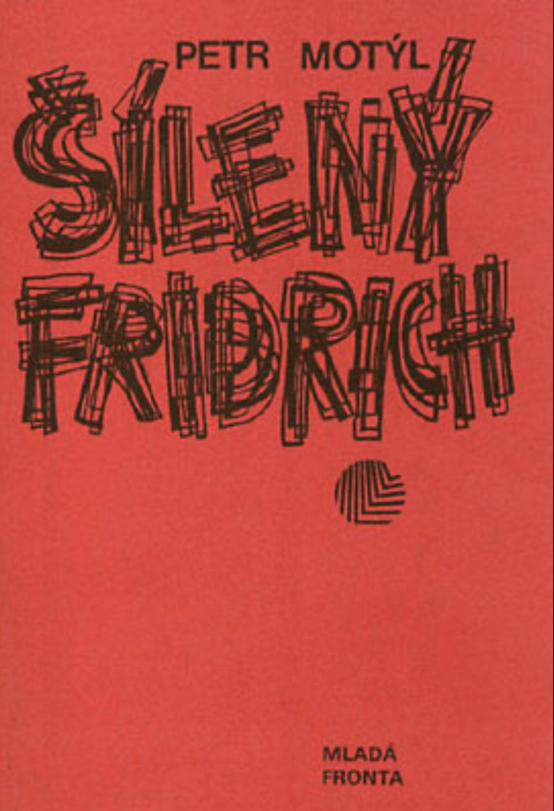
Vydala Mladá fronta v Praze v roce 1992.
Obálka: Tatiana Svatošová.
Svazek 36 v edici Ladění, redaktor knížky: Jiří Rulf.
Anotace
Sbírka básní s výrazně ostravskou tematikou. Hodně se vztahuje k odkazu Petra Bezruče stylizací do básníka-barda, formou se hlásí k modernější poezii, k Jiřímu Kolářovi či Carlu Sandburgovi, jsou tu i surrealistické tóny.
Sbírka měla úspěch u kritiky a zařadila autora „do škatulky“, ve které však setrval jen malou chvilku, což mělo za následek značnou a dlouhou, ba setrvalou rozpačitost kritiků.
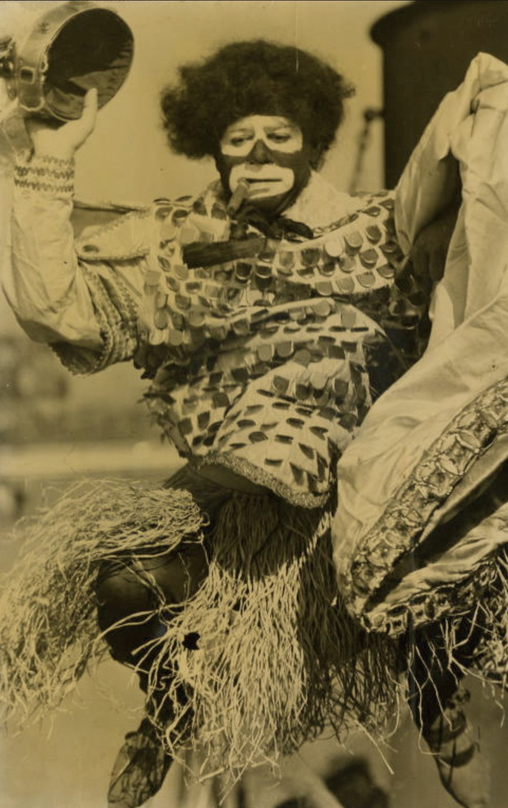
Inu, škatulka je škatulka. Public domain / Wikimedia Commons
Ukázka
ONDRÁŠ MAGDONEM PODPÍRANÝ
v bartovské harendě i v harendách jiných
Fridrich v podobě vlka vstupoval
psa s červenýma očima plameny a žár
i jiné zlé kousky
v dobách průmyslové revoluce vyváděla
v dobách stavby železnic snad ještě víc
již tenkrát těmito termíny
prosťáčky ohromoval
chudých ni bohatých nešetřil
prorok kvasné chemie a hormonů
vlk vlkodav jenž z skály svrhával
a sousto vzal od úst
i babičce na smrt prolezlé
svítící postrach
pánů ze Slezské a pomahačů
s pytli zlata se z toulek navracel
někdy svůj poklad v harendě rozdal
někdy svým plamenem harendu vzňal
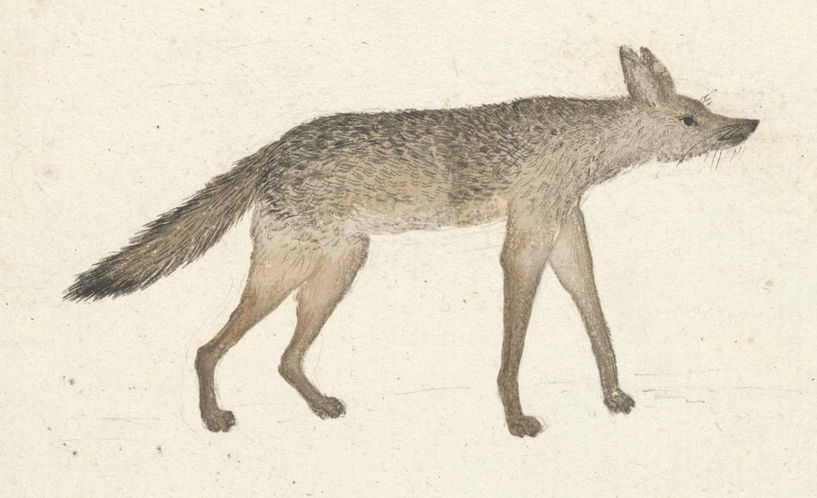
James Bruce (1730-1794) Wolf. Public domain / Wikimedia Commons
Recenze Pavla Janáčka v Lidových novinách 21.1.1993, příloha Národní 9
ndk.cz/view/uuid:bd13b3e0-9077-4e02-b5c4-57fc...
Pavel Janáček
cs.wikipedia.org/wiki/Pavel_Jan%C3%A1%C4%8Dek
Pavel Janáček
Nejen jakoby doopravdy – poznámka k několika knihám nových autorů
Šílený Fridrich Petra Motýla (Mladá Fronta, Ladění) obsahuje dva cykly: titulní je mnohem bohatší než kličkování chemizovaným životem v ostravské kádince v druhé půlce knížky. Jistě jsou mi ty verše blízké pro aktuální způsob, jímž zacházejí s Bezručem, pro směs ironie i vzdoru, pro rozpětí světa mezi housličkami a skřípěním zubů. Sám ústřední motiv skladby je účelný: Fridrich, plující subjekt mnoha epoch i tváří, „můj potomek“ i „svítící postrach“ průmyslové revoluce stojí v trvalém napětí s lyrickým hrdinou (tady se to slovo nevzpírá) Motýlových textů, znejisťuje identitu jeho i svou. Je to vlastně magické božstvo nad zchátralou aglomerací, která už na dějiny jen vzpomíná: hrozí peklem a zároveň nabízí zprostředkovat podíl na celku a trvání.
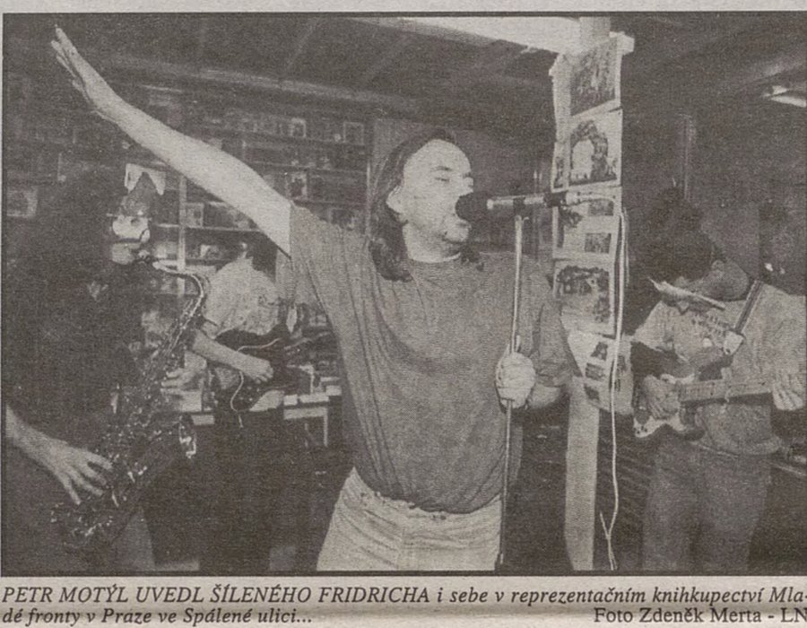
V knihkupectví MF ve Spálené ulici v Praze, 1992. © Zdeněk Merta Lidové noviny
Recenze Mirka Kovaříka v časopisu Tvar, ročník 1993, číslo 5, str. 11
archiv.ucl.cas.cz/index.php?path=Tvar/4.1993/...
{kind=link}
Mirek Kovařík (1934-2020). Byl především velikým propagátorem poezie. Uvedl v širokou známost poezii Václava Hraběte, což byl za socialismu malý zázrak. Anebo velký zázrak. Při různých příležitostech recitoval před publikem americké básníky beat-generation. A v pořadu Zelené peří v divadélcích a v rozhlase po desítky let uváděl nové talenty české poezie.
Mirek Kovařík
cs.wikipedia.org/wiki/Mirek_Kov%C3%A1%C5%99%C3%ADk
Mirek Kovářík
Ondráš Magdonem podpíraný
Šíleným Fridrichem (Mladá fronta 1992, edice Ladění sv. 36) vstupuje Petr Motýl do našich v této době poněkud nepřehledných literárních humen a záhumní především jako pokračovatel nebo spíš osobitý rozmnožitel určité tradice. Té, které se říká bardství a má svůj archetyp v keltské lidové poezii údělem pěvce vyslovujícího svůj nesmiřitelný postoj za celou entitu. Dnešní bardství přísně místopisné hranice dávno překročilo, nicméně jisté spojení s regionem, odkud bard-pěvec své volání vysílá k světu, stále zůstává – vzpomeňme příkladně na beatnickou provázanost k free-jazzové tvářnosti sanfranciských lokálů nebo k intelektuální atmosféře Greenwich Village.
Ani Motýl se této lokální zakotvenosti nevyhýbá a naplňuje výbušné miniděje svých básní koloritem Ostravska, vycházeje tak z pozic Bezručových nebo raného Závady z období Panychidy, Sirény a dalších sbírek z 30. let. Ostatně je to řečeno naplno hned v předznamenání: „Odehrává se v Ostravě-Přívoze a na okolní zeměkouli“. Oč tedy půjde? Na záložce čteme, že nás Motýl „zaujme syrovostí životního detailu“ a že „zároveň však skutečnost povznáší do roviny básnického mýtu. Proto v jejím pozadí můžeme slyšet různorodé, ale přece zažité vlivy, jaké představují Wernisch, beatnici, ale i Bezruč“. Budiž, stejně tak dobře mohu přičinit, že se tu Motýl ocitl v blízkosti Kolářových Dnů v roce a je esenciálně přítomen i v jiné tradici, jež se v české poezii přesouvá od poetiky Skupiny 42 přes záblesky kruté reality let 50. v díle Zbyňka Havlíčka a jeho surrealistických spřízněnců až k básníkům „poezie všedního dne“ na pomezí 50. a 60. let. Tyto všechny filiace mluví pro Motýla, je to propojení, které zároveň vypovídá o určité optice pohledu – vždycky jde o pohled zdola, optiku outsiderství, ztotožnění s těmi, do jejichž zástupů se hlásí v dobách těžkých i básníci transcendentní orientace – viz Hrubínovo „s chudými jdu touto zemí, jsou té země prach“ z období Jobovy noci. Proto je Motýlův Šílený Fridrich skutečně plnohodnotnou událostí literární především pro společenské nebo spíš sociální vazby svých protagonistů, jejichž osudy ho přiměly, aby vzal na sebe roli barda. Jarek Haldař, Péťa Majzl, Pinďa, Marija Švačová, Apo, psycholožka Maruna a další a další vytvářejí zvláštní sociální stafáž drsně naskicovaných dramat mikroklimatu všednodennosti dnešního Ostravska, jak ho ostatně známe i z písniček Jarka Nohavici nebo Dobešova charakteristického panoptika.
Ondráš Magdonem podpíraný, tak se Šílený Fridrich stylizuje včetně kulis památné bartovské harendy. Jazyk Motýlův je přitom traktován trochu jízlivě jako určitá vzpoura proti patetickému podloží sociálních balad a je od začátku do konce sbírky vytrvale propasírován sítem originálního metaforického vidění, jemuž není cizí ani odborná terminologie chemického názvosloví. To známe i odjinud – viz horolezecké výrazy hojně rozeseté v Divišově Sursum nebo slovník fabričky z nejstarších básní Svatavy Antošové v almanachu Zelené peří.
A tak i ve vanutí mytické rozervanosti je Šílený Fridrich postavou věrojatnou a zcela současnou, jakkoli namířenou svým gestem do věčnosti – jde tu vpravdě o úděl básníka, řečeno poněkud vznešeně, o toho, kdo vidí dál a je oním poslem, jehož vzkaz nelze oslyšet, chceme-li o době vědět víc…
Syrová věcnost Motýlovy poezie má ovšem i své meze – ne vždy se spolehlivě uvolní napružené pero imaginace a báseň na konci splaskne (Za okny bílá tma, Pošetilé připomínky, Každý den svátek aj.), nikdy však na úkor nějaké předem vykalkulované pointy – takovýto druh básnění je Motýlovi cizí, nechystá pro nás nějaká senzační překvapení za každou cenu. Jde mu spíš o epické miniakty, zachycení několika článků nekonečného řetězu, který nezávisle na pojmenovaném a popsaném pokračuje neúprosně dál.
Může těchto pouhých 50 stran obou cyklů (Šílený Fridrich a Chemie v zubech) z let 1989-90 naznačit cosi v současné literární situaci? Zcela určitě: nová věcnost čišící z Motýlovy poezie signalizuje potřebu skutečného sestupu až ke dnu – a to v čase, kdy se od tohoto stupně ponoru odráží celé lyrické povědomí nejenom snad nejmladší literární vrstvy. Známe ho rovněž z textů rockových, punkových, rapových hudebních skupin, ale i ze světa písničkářů, jakož i spřízněně z tematického okruhu filmové dokumentaristiky a fotografie, a i dramatické esenciality některých studiových scén. Sem patří poetika Motýlova Šíleného Fridricha, naprosto jasně a organicky vyrůstá z tohoto podivného času let konce století i tisíciletí, které si hledá své tvůrce i interprety. V přítomné sbírce jako by zárodečně nachází Petr Motýl obé.
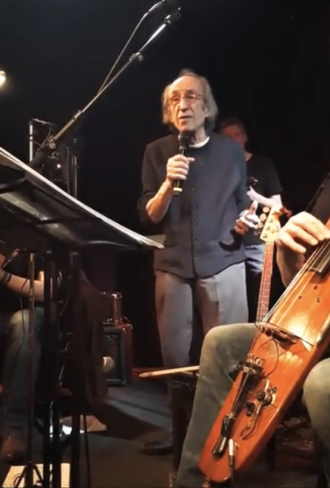
Mirek Kovářík (1934-2020). Foto: Pastorius / Wikimedia Commons / CC BY-SA 4.0
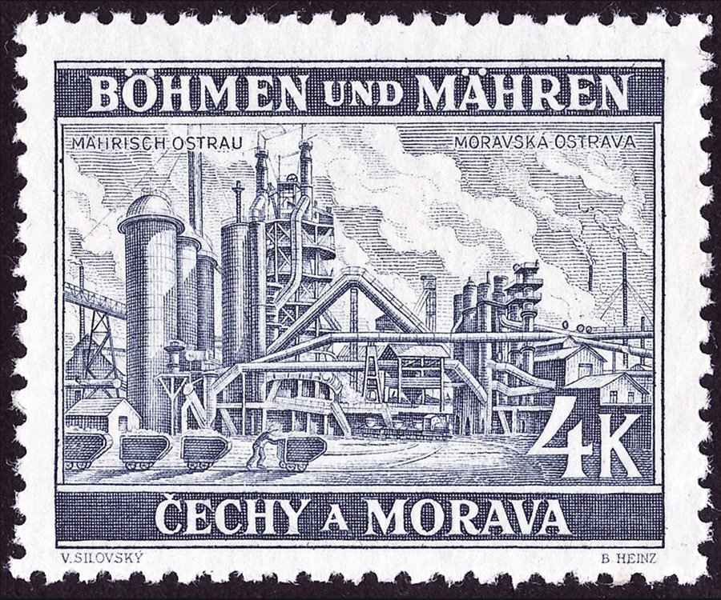
Poštovní známka na rohu ulice. Public domain / Wikimedia Commons
Studie Pavla Hrušky v knize V souřadnicích volnosti, Academie 2008
Text knihy online: kramerius.lib.cas.cz/view/uuid:257b0a64-b840-...
Pavel Hruška (*1964), literární kritik a teoretik. Autor knihy Cesty do ostravského (v)nitrozemí (2019) a hlavní autor publikace Literární Ostrava 1918 – 2018, především její části Ani síť, ani hvězda (2025)
ff.osu.cz/kcl/pavel-hruska/35100/
Rozhovor s Pavlem Hruškou o antologii Literární Ostrava: www.idnes.cz/ostrava/zpravy/pavel-hruska-rozh...
Pavel Hruška
Petr Motýl – Šílený Fridrich
(výňatek z knihy V souřadnicích volnosti)
Šílený Fridrich je – po éře autorských samizdatových tisků – v pořadí druhou sbírkou Petra Motýla (* 1964) vydanou v oficiálních nakladatelstvích. Její první, stejnojmenná část je konvolutem textů spjatých s onou titulní postavou, jež se ukazuje být stylizací lyrického subjektu do pozice jakéhosi básnického hrdiny, který se pak takto stává dominantním představitelem vlastního lyrického stavu. Je tedy lyrickým „já“ (resp. jeho částí) transformovaným do prostředkující sebezástupné formy lyrického „on“, přičemž takové básnické gesto je v Motýlových verších i přímo tematizováno a jeho básnický hrdina je ve vztahu ke svému „stvořiteli“ kontrastně vybaven značnou suverenitou, svéprávností a až prométheovskou vzpurností: „[…] od dětství jsem byl příliš zaneprázdněn/ Fridrichem/ a psaním o něm/ dál sedím a přemýšlím/ přijde mě zardousit nepřijde.“ (21) Fridrich tak mj. vystupuje i coby protihlas vlastního lyrického já a jeho básnickou rolí je – vedle jiných funkcí – být personifikovaným hlasem svědomí, věčným stínem, neumlčitelným a výsměšným glosátorem životních peripetií svého stvořitele: „[…] idiote poctivý s rukama bez špíny/ bez jizev nikdy si nemakal co/ […] Fridrich koutky nahoru chrchlá/ už se nemůžeš vrátit panáčku/ uhýbám a chci ho obejít/ svou smyšlenku svůj osud/ všechno vidí s kým jsem chodil/ doprovázel slzy loudil.“ (27) Fridrichova postava tak básníkově výpovědi nabízí možnost sebevyjádření prostřednictvím několika vlastních hlasů, formou osobitého lyrického vícehlasí (a v tomto smyslu je tedy Fridrich spíše než plnokrevnou „postavou“ jen určitou příležitostnou funkcí či básnickou figurou) – sama v něm obsazuje několikero poloh: stává se nositelem básnické (sebe)exprese (např. v obrazoboreckých gestech vůči oficiálně tradovaným hodnotám) či originálním nástrojem (sebe)reflexe v autokomunikačních alegoriích, v nichž bývá jako jisté emancipované a značně autonomní „superego“ hodnotitelskou instancí prožitků lyrického „já“.
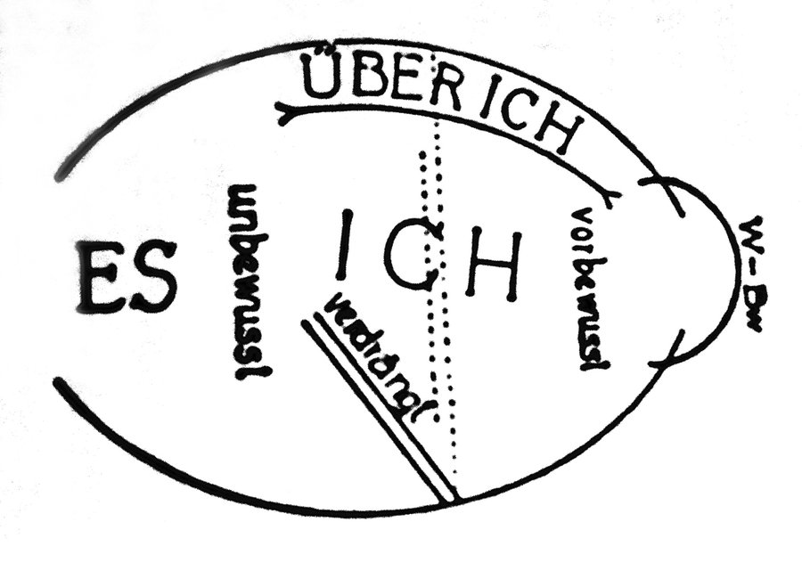
Sigmund Freud photographical reproduction Über-ich by Rolf Nemitz, 1933. Public domain / Wikimedia Commons
Sám o sobě se Motýlův básnický hrdina ve verších představuje jako tvar mnoha faset, figura barvitě modelovaná, již ze své podstaty náchylná k dalším metamorfózám, a její povahopisný portrét tudíž může být vždy jen částečný („vždycky porušuje zákony/ včetně svých vlastních“, 30). Fridrich je jakýmsi chodcem periferií industriálního velkoměsta, ale i labyrintem chodeb světové historie; zažívá banální věci každodenního života, současně vlastní rysy hrozivě komického demiurga; je profétem (úvodní báseň nese název Fridrich – prorok a genetik), smějícím se zenovým filozofem, všepronikající esencí („ten hrozný duch všude pronikající/ pouhým pohledem/ a zděšené matky zří jeho strašnou podobu/ ve svých novorozencích“, 16). Zároveň je bytostně spjat s oním periferním prostředím, které je živnou půdou jeho existence: beznadějí a kouzlem průmyslového města s jeho sítí špinavých ulic, hald a hospod, v nichž žijí svérázné postavičky poblázněných plebejců, k nimž jako by také on sám svou hravou jurodivostí přináležel („Fridrich s vozíkem porcelánu/ od domu k domu/ šálky rozbíjel o práh a talířky prodával/ za pár šupů/ za trochu tabáku za kremroli/ svítil si baterkou za poledne/ […] v klopě paví pera/ v klíčence hrách“, 18). Sebejistota a neomezená volnost „boží bytosti“, ve které tak osobitě nakládá s čímkoliv, koresponduje s oním do titulu vyzdviženým povahopisným atributem, o nějž se lze opřít – vzhledem k charakteru Fridrichových skutků – jako o epiteton constans. Navzdory své „neuchopitelnosti“ stává se tato proměnlivá figura i zřetelným gestem vzpoury vůči uspořádanému světu oficiálních norem a hodnot (např. právě hravou nevypočitatelností svých proměn a skutků), z něhož jej už vyděluje i ono trvalé signum šílenosti. Je mu dána moc nad lidmi, úřady, dějinami; jeho magické síle neodolá ani středobod křesťanské víry, přičemž jako vítězný dobyvatel obsazuje tradiční místa a piedestaly onoho popleněného sakrálního světa svou fantomatickou „podobou“, svou „regionální tváří“ (jejímiž „rysy“ jsou charakteristická topoi průmyslového životního prostoru), ostravským geniem loci („za jakým obzorem hleděli/ plným autobusů tramvají/ šachet rudých plamenů/ nebe kam Fridrich/ pravidelně svou podobu otiskoval/ úžasný ksicht/ plný čmoudu sazí papriky/ děravé oči s chladícími věžemi/ s kyselinou sírovou“, 31). Ostatně celá Motýlova sbírka nese symptomatický lokálně-centrický podtitul transponující zároveň scénu jeho básní až do obecně metaforické roviny: „Odehrává se v Ostravě-Přívoze a na okolní zeměkouli.“ Postavu Fridricha v její proměnlivé podstatě lze tak v neposlední řadě interpretovat rovněž jako symbol možnosti a schopnosti svobodně čelit tlaku světa a celý tento básnický cyklus je pak možné též číst – i díky již připomenutým metatextovým pasážím v Motýlových verších – jako alegorickou zprávu o potencích a limitech tvůrčího básnického gesta.
Také druhá část sbírky nazvaná Chemie v zubech je – podobně jako část první – místopisnými odkazy lokalizována kamsi na ostravský městský okraj, zde především do prostředí pivnic a bufetů, v nichž se hojně vyskytují všelijací „ublížení ztracení mizející/ alkoholičtí filozofové“ (48). Mnohé z básní jako by byly jakýmisi mikroportréty těchto společenských outsiderů, zástupných představitelů plebejského „anti-světa“, negujících svými alkoholickými výstřelky a životními způsoby všechny oficiální normy chování i tradiční hodnoty tzv. „vyšší kultury“ (vzdělání, spořádaný občanský a rodinný život, bezúhonnost, pracovitost atp.), jejichž symbolickým představitelem se v textu stává lexikální vrstva odborného chemického názvosloví. Chemická terminologie jakožto reprezentant světa vědy s její schopností a snahou vypočítávat jevy a děje až do minimálních hodnot a lidský život přepisovat do přesných termínů neosobních definic tak v básních nabývá znakové platnosti: proměňuje se v mluvčího oficiální společenské morálky, životní přehlednosti a spořádané pravidelnosti, v protihráče živelných projevů a svérázných způsobů lidí ze společenského okraje. Básník neskrývaně sympatizující s oním alkoholickým outsiderstvím pak v ikonoklastickém gestu záměrně užívá právě chemických termínů a obrazů k metaforizaci jevů drsné každodenní reality, rouhačsky je přepisuje do „plebejského jazyka“ (např. takto dešifruje zkratku pro látku nejvyšší čistoty: „bromičan draselný p. a./ co asi znamená p. a./ potřeba alkoholu/ pitomý asociál/ který sedí v parku kouří/ popíjí litr rybízáku“, 39), oficiální a tradiční hodnoty zbavuje lesku jejich kontrastně ironickým spojováním např. s prvky a projevy z oblasti asociálního chování („psycholožka Maruna/ vyhrne si špinavou sukni/ a vychčije se na rohu“, 48) atp. Jeho alkoholičtí hrdinové pak příznačně nemívají ani svá občanská jména, ve verších jsou titulováni pouze svými přezdívkami, a objeví-li se už takové jméno, je jeho úřední „vznešenost“ deklasována životními či řečovými projevy dotyčné osoby („nebýt ta amnestyja/ tak bysem scípla/ paní Marija Švačová“, 36). Stejně tak i onen oficiózní jazyk chemické terminologie bývá v básních konfrontován s verši jadrně mluvní povahy s charakteristickými prvky vulgarismů či regionálního dialektu, výraznými to komponenty jazykově stylistické roviny díla.
Byl-li v cyklu fridrichovských textů Motýlův odpor k světu oficiálních hodnot a k jeho představitelům více či méně „šifrován“ skrze figuru a činy hlavního protagonisty, a takto pak i nadlehčován humorně bizarním obrazem či groteskní parabolou (břitce sarkastický tón se ozýval pouze v sebereflexivních pasážích), v části druhé tento odpor značně zesiluje, nabývá na doslovnosti a spolu s básníkovým regionálním patriotismem se posouvá až do idiosynkratických poloh („blbečci z Prahy“, 41; „vy svině/ co jste to všechno zkurvili“, 46; „pokusy si strčte do prdele do píči nebo/ kam chcete kurvy jedny zasrané“, 39; „myšlenky hodné zaznamenání/ nějakého zasraného PhDr.“, 48). Stesk za mizejícím světem staré průmyslové Ostravy se pojí s básníkovými pocity skepse a bezvýchodné životní marnosti: budoucnost je např. metaforizována jako pád opilce do hospodského záchodku a příznačnými se jeví i závěrečné verše celé sbírky („jen tma/ všudypřítomná tma zůstává“, 50). Dobře cítí, že neexistuje „nějaký časově odolný názor“ (45), nějaké „všeobecné vysvětlení/ s jasným chemickým složením“ (45), a že ani ono alkoholické plebejství není s to být uspokojivou odpovědí potřebě životního smyslu.
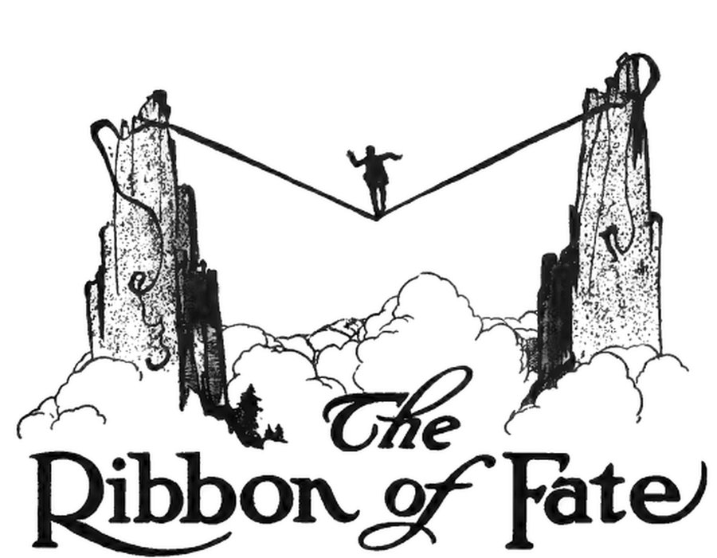
Stuha osudu. Public domain / Wikimedia Commons
Výrazný motiv konzumace alkoholu, především piva (v Motýlových verších se stává až jakousi kultickou činností, hodnotou „sui generis“), zastupuje v básních širokou významovou škálu: pití je přirozeným projevem i symptomem životní vratkosti, symbolem a katalyzátorem osvobodivé potrhlosti i blasfemicky vzpurným gestem světa těch „dole“ („účinný prostředek/ na utlučení lepších vlastností/ zabíjení inteligence/ odrovnání charakteru“, 50) – v neposlední řadě je lyrickému subjektu i nezbytným, dočasně účinným, milosrdným analgetikem na bolest z nemožnosti nalézt odpovědi na své existenciální otázky („šestatřicet dvanáctek/ k utlumení pocitu života“, 35). Ale i díky skutečnosti, že se citově zdůvěrnělý ostravský prostor proměňuje v Motýlově poetice v zásobárnu metafor, v nichž se typické regionální prvky stávají symboly lyrických stavů i alegoriemi osudové setrvačnosti lidského bytí („jak hajcmana si vinu nes“, 27; „raďte si dál/ nepomůžete/ halda dýmá/ v těžní věži/ kolo se otáčí“, 35), lze ve verších zaslechnout i cosi jako básníkovo „odi et amo“ („skvělý shnilý svět“, 31).
Už svou motivickou strukturou asociuje Motýlova sbírka četná díla inspirovaná životem v prostředí průmyslového Ostravska. V kontextu domácí literární tradice vyznívá text značně travesticky a polemicky (např. k některým významovým aspektům díla Závadova či k poezii padesátých let s jejím ideologickým kultem hrdinné, společensky smysluplné hornické práce a životního optimismu atp.). Rovněž i škálou stylizačních gest odkazuje k postupům známým z národní literatury (zde např. k okruhu gigantických Bezručových básnických stylizací) a typem výstavby lyrického subjektu (básnický hrdina) pak upomíná na podobné projevy autorů domácích (Norbert Holub, Jaroslav Pížl, Jiří Rulf, Ladislav Novák aj.) i světových (Zbigniew Herbert, Juhan Viiding, Ted Hughes aj.).
Ondráš Magdonem podpíraný
v bartovské harendě i v harendách jiných
Fridrich v podobě vlka vstupoval
psa s červenýma očima plameny a žár
i jiné zlé kousky
v dobách průmyslové revoluce vyváděl
a v dobách stavby železnic snad ještě víc
již tenkrát těmito termíny
prosťáčky ohromoval
chudých ni bohatých nešetřil
prorok kvasné chemie a hormonů
vlk vlkodav jenž z skály svrhával
a sousto vzal od úst
i babičce na smrt prolezlé
svítící postrach
pánů ze Slezské a pomahačů
s pytli zlata se z toulek navracel
někdy svůj poklad v harendě rozdal
někdy svým plamenem harendu vzňal
Vydání:
Šílený Fridrich, Mladá fronta, Praha 1992.
Reflexe:
Fridrich, […] je vlastně magické božstvo nad zchátralou průmyslovou aglomerací, která už na dějiny jen vzpomíná: hrozí peklem a zároveň nabízí zprostředkovat podíl na celku a trvání. Pavel Janáček: „Nejen jakoby doopravdy“, Lidové noviny 21. 1. 1993 (příl. Národní 9).
Jazyk Motýlův je […] traktován trochu jízlivě jako určitá vzpoura proti patetickému podloží sociálních balad […]. Mirek Kovářík: „Ondráš Magdonem podpíraný“, Tvar 1993, č. 5, s. 11.
Motýl […] dokáže balancovat na hraně mezi ozvláštněním a trapností, zvláště okázalým nedodržováním básnických postupů a konvencí typu rytmické uspořádanosti či pointy na konci. Petr A. Bílek: „Od gest k sebevýrazu“, Nové knihy 1992, č. 43, s.
3.
Šílený Fridrich bude patrně dalším závažným článkem gellnerovské ražby v české poezii a Petr Motýl se představuje […] jako mistr kontextuální esence (maně se tu stýká v bardsko-beatnickém oparu třeba i Bezruč s Bukowským!)… Mirek Kovářík: „Telegrafické recenze“, Iniciály 1993, č. 31, s. 61.
Slovo autora:
Poezii vidím vždycky hodně moc spjatou s místem […]. Ostrava měla v určité době strašně silnou atmosféru. Připadá mi, že tato atmosféra v souvislosti s proměnou kraje, s rušením dolů a stagnací průmyslu se dostává někam jinam. Atmosféru to mělo obrovskou, jako by tam přímo ty živly, přírodní síly vystupovaly ze země […]. Je to naprosto v pořádku, že se pije. Na tom není nic výjimečnýho nebo prokletýho. Prostě se pije, tak to je. „Prostě se pije“ (rozhovor vedl Jan Nejedlý), Nové knihy 1999, č. 39, s. 7.
Bibliografie ohlasů:
STUDIE: M. Zelinský, in Literatura v literatuře, Praha–Opava 1995, s. 41–43; J. Bielecki, Tvar 1996, č. 19, s. 6–7. RECENZE: P. A. Bílek, Nové knihy 1992, č. 43; M. Kovářík, Iniciály 1993, č. 31; týž, Tvar 1993, č. 5; P. Janáček, Lidové noviny 21. 1. 1993 (příl. Národní 9); P. Hruška, Tvar 2000, č. 8.
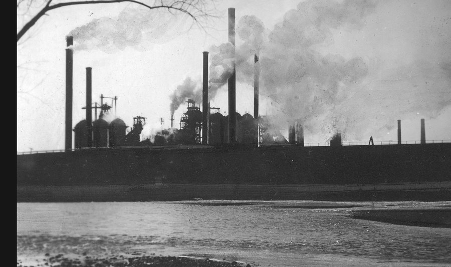
Huť Žofie – Ostrava. Public domain / Wikimedia Commons
Studie Miroslava Zelinského ve sborníku Literatura v literatuře, Ústav pro českou literaturu – Slezská univerzita 1995
edicee.ucl.cas.cz/data/sborniky/1995/LVL/9.pdf
Miroslav Zelinský (*1961), literární vědec a teoretik, redaktor, překladatel ze slovenštiny
www.databazeknih.cz/zivotopis/miroslav-zelins...
Miroslav Zelinský
Petr Bezruč věčně živý
Na této konferenci se zcela nezávisle na sobě objevily dva tituly příspěvků, které jakoby sem svým perziflujícím tónem nepatřily, jako by byly z jiného žánru, z textu jiné úrovně (vedle mého ještě Vladimír Pfeiffer: Petr Bezruč spící, bojující.) Jako východisko k úvaze obecnější jsem zvolil srovnání Bezručova díla (či přesněji jednoho dílčího problému) s poezií autora, který je od slavného barda vzdálen datem narození téměř celé jedno století. Jak uvidíme později, právě tento časový rozdíl bude pro nás jednou z vnitřních spojnic. A dovolím-li si zůstat ještě chvíli v rovině poetiky zmiňovaných titulů, pak si troufám tvrdit, že právě takové intertextuální setkání, o kterém se chci zmínit, si Bezruč sám předpověděl či ještě přesněji, že náš příspěvek odpovídá na otázku z finále básně Motýl, kdy obraceje se k tomuto polétavému hmyzu, klade básník otázku: „Co bych já, co s tebou robil?“ Ano, oním autorem, který mi dnes stojí oproti Bezručovi, ovšem nikoliv ve smyslu konfrontačním, je Petr Motýl (nar. 1964), autor tří básnických sbírek (Ten veliký veliký kamenný dům nebo hrad tam daleko daleko v horách, 1990; Šílený Fridrich, 1992; Jazykem haldy 1993). A nyní již trochu vážněji, byť to tak ne všem přítomným může připadat.
Není naším úkolem zde znovu prokazovat sounáležitost Bezručovu s českou poezií symbolistickou či přesněji dekadentní. Přestože vztahy mezi autory z okruhu Moderní revue a Bezručem byly oboustranně polemické až nesnášenlivé, příbuznost poetického instrumentáře je jednoznačně prokazatelná a dostatečně prokázaná. Jeden prvek básnické struktury je však spojnicí nejvýznamnější. Mimo jiné také proto, že je místem, kde zároveň dochází k evidentnímu rozchodu obou poetik. Zajímá nás tedy především lyrický subjekt, respektive jeho stylizace. Právě ty jsou důvodem pro to, abychom Bezruče označili jako výrazný zjev postdekadentní. A to ve smyslu časovém i poetologickém. Tyto stylizace jsou už prvořadě kreativním provokujícím gestem zaměřeným vůči okolnímu světu destruktivně a vůči svému tvůrci autodestruktivně. Stále silněji vystupuje vedle agresivity tohoto postoje také jeho sociální a národně obranná orientace i podmíněnost. Zaměřím se dnes na tyto podoby, které mají proslulý charakter hyperbolizovaného titána, škaredého zjevu, kovkopa a uhlokopa, velkého muže, obra zmrzačeného prací v dolech a hutích, gladiátora.
Nechtěl bych však zůstat omezen pouze na úzký prostor dvou poetik, proto se pokusím o trochu širší, kontextový vstup ke své úvaze. Zcela nedávno, na konci 80. let našeho století, vtrhl do slovenské poezie básnický živel Taťjány Lehenové (Pre vybranú spoločnosť, 1989; Cigánský tábor 1991) který otevřenou erotičností básně Malá nočná mora vyprovokoval v roce 1988 především slovenskou (ale také českou) literární kritiku k velkým diskusím. Pravděpodobně poprvé zde bylo použito pojmu „neodekadentní poetika“ převážně v souvislostech s básnickým reflektováním tělesnosti, tělesných pocitů a prožitků jako nástrojů emancipace lyrického subjektu (a to nejen ve smyslu úzce feministickém). Pod podobným zorným úhlem se začalo uvažovat nad poezií Ivana Koleniče (např. Pôvabné hry aristokracie, 1991). Mezi českými básníky je označení „neodekadentní“ možná ještě oprávněnější. J.H.Krchovský (Noci, po nichž nepřichází ráno, 1991) či Luděk Marks (Stín svícnu, 1994) se k poetice „fin de siècle“ otevřeně hlásí na úrovni tematické (mj. vypjatý erotismus, šokující morbidita, zhnusení světem), strukturní (pravidelné rytmické členění, tradiční strofické útvary) i myšlenkové (provokativnost postojů, ostentativní nihilismus). Soustředím se dnes na případ méně zjevný, ale podle mého názoru stejně průkazný a dovoluji si přizvat k této „vybrané společnosti“ Petra Motýla.
Dnešek nám z mnoha důvodů, z nichž první je onen fakt konce právě našeho století, neumožňuje (a to nemyslím jako hodnocení v kladném ani záporném smyslu) po estetických a politických debaklech levých avantgard směřovat s vážnou tváří nápravné snahy uměleckých inciativ do sociální oblasti. Co tedy zbývá? Kterým směrem se lze v těchto aktivitách otočit a jaké místo zaujímá básník? Sebezhlíživě artistní, blasfemické gesto, za které se ukrývaly hypercitlivé duše autorů Moderní revue, má dnes podoby ještě vypjatější, agresívně se obrací proti všemu a proti všem. Vulgarismy, rouhačské postoje, permanentní jízlivá konfrontace vysokého s nízkým (tematická i strukturní) nešetří ani Boha, ani vlast, ani žádný jiný, stejně zneužitelný a také skutečně zneužitý emblém. Civilizační okoralost dosáhla takové míry, že básník musí aktivizovat nejspodnější proudy lidského svědomí a senzibility, nebezpečně balancovat na hranici, za kterou je už cynismus a pornografie. Součástí poezie se stávají sociální motivy nesené zájmem o existenci na periferii lidského společenství. A právě hyperbolizované stylizace a autostylizace fyzického subjektu se na tomto poli uplatňují velmi často. Stylizovaný (a na některých místech autostylizační) Motýlův konstrukt v podobě Šíleného Fridricha nestojí však v kontextu dnešní poezie sám. Inspirace jeho i jeho „bratří“ jako je Helmut Jiřího Syrovátky (O Helmutovi a jeho stříkačce, 1991) Náčelník Lapeš Norberta Holuba (Náčelník Lapeš a náčelník Lapeš, 1991) pocházejí jak z emotivních zdrojů dekadentních a bezručovských, tak ale také třeba z kolářovské kontroverze reality a emocionality jejího prožívání nebo ironické racionality Miroslava Holuba či v českém kontextu zdomácnělého Zbigniewa Herberta.
Motýlův Šílený Fridrich (mimochodem neukryl Bezruč v postavě markýze Gera právě arcivévodu Friedricha Habsburského?) je svým zjevem podoben bezručovským stylizacím: „…nebe kam Fridrich / pravidelně svou podobu vtiskoval / úžasný ksicht / plný čmoudu sazí papriky / děravé oči s chladícími věžemi / s kyselinou sírovou / dávno se dívaly na skvělý shnilý svět…“ Svými činy a gesty se však od něj výrazně odlišuje, byť k němu explicitně odkazuje. (Odnráš Magdonem podpíraný). Nejčastěji můžeme číst drzé persifláže zbojnického motivu: „…chudých ni bohatých nešetřil /…/ a sousto vzal od úst / i babičce na smrt prolezlé / svítící postrach / pánů na Slezské a pomahačů / s pytli zlata se z toulek navracel / někdy svůj poklad v harendě rozdal / někdy svým plamenem harendu vzňal“. Fridrich je praotcem podivných existencí, ale zároveň i potomkem lyrického subjektu, je demiurgem lidských osudů, hrobníkem, vlkem a vlkodlakem. Takto stylizovaný hyperbolický subjekt Motýlovy poezie je tedy v prvé řadě zjevem hodnotově nejednoznačným a nezařaditelným, jeho proměňující se podoby, neočekávaná gesta a činy zklamávají v každém případě čtenářův horizont očekávání vytvořený na základě zkušeností se subjektem Bezručovy poezie, ale nejen s ním. Odkazuje se tak k permanentní nejistotě aktuálního světa, k obtížím, které vznikají, vytvoříme-li si o něm představu příliš petrifikovanou. Implicitně nás autor vyzývá k ustavičné bdělosti, o to více je zde tedy přítomen apel na hodnotovou ukotvenost čtenářského subjektu. Subjekt čtenáře už není pohyblivým prvkem této estetické soustavy. Naopak, právě čtenář je entitou pevnou, sjednocující, kolem něj obíhají jako při panoramatickém představení v planetáriu osoby, události, děje, které v recepčním gestu sjednocuje a dotváří jejich smysl. Ironická distance od citovaného vzoru je stejně dobře důkazem jeho živé existence, jako je mlčení o něm svědectvím o jeho recepční, sémiotické smrti.
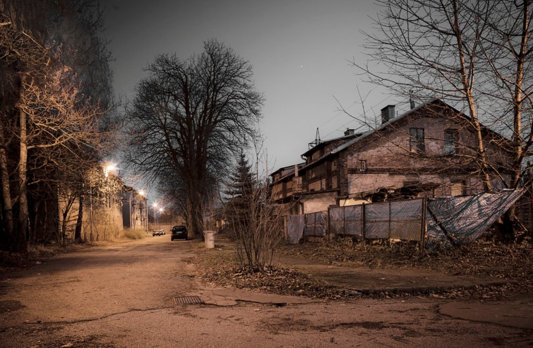
Kolonie Jeremenko, Ostrava-Vítkovice. © Boris Renner / CC BY-SA 3.0 / Wikimedia Commons
Vasilios Chaleplis – diplomová práce
Poezie Petra Motýla a kontext české poezie
na přelomu XX. a XXI. století
/Users/petrmotyl/Downloads/DP_Vasilios_Chalep...
O Vasiliosi Chaleplisovi (*1993) na stránkách Asociace spisovatelů:
„Vasilios Chaleplis patří mezi organizátory a propagátory literárního života v Ostravě. Věnuje se copywritingu, dramaturgii a momentálně dokončuje doktorský program Teorie a dějiny české literatury na Ostravské univerzitě. Spoluzaložil kulturní platformu Harakiri a mezinárodní literární festival Inverze. Také je jedním z autorů knihy 111 míst v Ostravě, která musíte vidět mapující dynamiku ostravského života. Jeho básnické texty jsou zastoupeny v antologiích i sbornících (Pandezie, Harakiri) a v prvním ostravském poeziomatu. V dubnu 2023 mu v jeho domácím nakladatelství vyšel básnický debut Flavedo, za který byl nominován na Cenu Jiřího Ortena a na Moravskoslezské kulturní Ceny Jantar.“
asociacespisovatelu.cz/clenove/vasilios-chaleplis/
Vasilios Chaleplis
Šílený Fridrich (1992)
(výňatek z výše uvedené diplomové práce)
„Odehrává se v Ostravě – Přívoze a na okolní zeměkouli“
„Poznáváme Ostravu magickou v její šedi a průměrnosti.“
Básnickou sbírku Šílený Fridrich vydanou v edici Ladění považujeme za podstatnou a její interpretace se pro nás stane určující pro další srovnání. Sbírka představuje emblematické dílo Motýlovy tvorby, o čemž svědčí její zastoupení téměř ve
všech typologiích 90. let – především v těch od J. Trávníčka a M. Balaštíka, kde figuruje jako kvintesence autorovy rané básnické tvorby. Jak napovídá úryvek z knihy, citovaný na
samém začátku této kapitoly, Šílený Fridrich je první ze série děl, u kterého subjekt díla explicitně předesílá, že se bude odehrávat v Ostravě. Jak si všímá Piorecký, „[…] sloveso
‚odehrává se‘ implikuje příběhovost, je v něm obsažena další instrukce pro čtenáře, který si má z jednotlivých básní konstruovat celek, příběh.“
Autor se stejně jako u svého bibliofilského debutu vrací k již zmíněné sociální a smyslově vymezené každodenní existenci, skutečnost je zde ovšem povznesena do roviny básnického mýtu. V textu na záložce sbírky je odkazováno nejen k Ostravsku jako lokalitě, ale rovněž se upozorňuje na inspirativní vliv Petra Bezruče, Ivana Wernische (paralela mezi postavou „šíleného Fridricha“ a Wernischova „Bedřicha“) a poezie beatniků. Sbírka
je dělena do dvou relativně samostatných částí – „Šílený Fridrich“ s vročením 1989 a „Chemie v zubech“ pocházející z roku 1990. Na rozdíl od Motýlovy bibliofilské prvotiny, kde lyrický subjekt hravě až pitoreskně zachycuje motivy běžného života, ve sbírce Šílený Fridrich se projevuje spíše tíha lidského dramatu spojená jednak s nejednoznačně definovatelnou postavou samotného Fridricha – fantóma, antihrdiny, personifikací nezničitelného principu zla, chodce periferií industriálního města, principu dějinných pohybů, bezručovsky „škaredého zjevu“, který zosobňuje mytizovaný archetyp naturelu ostravského kraje a jeho obyvatel – a jednak s různými outsidery, baraby, vyvrhely, rváči a machry, kteří se hojně vyskytují převážně v druhém oddíle sbírky „Chemie v zubech“. Obrazy, které v sobě mnohdy skrývají sociální drama, se však lyrický subjekt, na rozdíl od varujícího, mnohdy patetického lyrického subjektu Petra Bezruče, nebojí karikovat – vysmívat se mu. P. Hruška si všímá, že v kontextu domácí literární tradice sbírka vyznívá travesticky a polemicky, „[…] a to např. k některým významovým aspektům díla Závadova či k poezii 50. let s jejím ideologickým kultem hrdinné, společenský smysluplné hornické práce a životního optimismu“.
Bezručův odkaz je nejcitelněji přítomný v básni Ondráš Magdonem Podpíraný: „v bartovské harendě i v harendách jiných / Fridrich v podobě vlka vstupoval / […] svítící postrach / pánů ze Slezské a pomahačů / […]“.
Samotná postava Fridricha se stala předmětem zájmu literárních historiků, především Pavla Hrušky a Karla Pioreckého. Zatímco Hruška považuje Fridricha za básníkovo alter ego (transpozici lyrického „já“), Piorecký tuto definici odmítá a tvrdí, že lyrický subjekt v postavě Fridricha nemizí a že jeho role je pouze posunuta v souladu s celkovou prozaizací Motýlovy lyriky, a to k pozici vypravěče (pozorovatele) – kronikáře Fridrichových činů. Lyrický subjekt zde totiž není „[…] problémem ani tématem“, tím je postava Fridricha. Ta buďto existuje v jeho vyprávěních nebo o ní lyrický subjekt píše: „od dětství jsem byl příliš zaneprázdněn / Fridrichem / a psaním o něm / […]“. My se v tomto přikláníme k názoru K. Pioreckého, který nepovažuje Fridricha za „[…] masku lyrického subjektu“, ale za zosobnění abstraktních principů, které je nezávislé na časových limitech individuálního lidského života: „píše se rok 1900 přesně nachlup / […]“, „v roce 1620 dávno před objevením Ameriky / […]“; „kde komunista prohrál / Fridrich trvá dál / […]“.
Hruška postavu Fridricha označuje pojmem „superego“. Dle
našeho názoru je toto označení rovněž přiléhající, ovšem ne v souvislosti s transpozicí lyrického „já“, ale v rámci souhrnného označení všech obyvatel Ostravy, kteří jsou ve
sbírce explicitně i implicitně přítomni a jejichž povahu, postoje a osobitost Fridrich mj. souhrnně představuje: „ten hrozný duch všude pronikající / pouhým pohledem / a zděšené
matky zří jeho strašnou podobu / ve svých novorozencích / […]“.
Pozornost si tomto oddíle zaslouží i kontrast na lexikální úrovni. Na jedné straně lyrický subjekt volí prostředky spisovné, místy dokonce archaické a knižní: „zrovna píši
čtvrtý díl Fridrichových dějin / […] ale dnes zrovna dnes právě dnes / vyhovět nemůžu / dávno jsem jinde zadán / […]“, na druhé straně prostředky nespisovné, hovorově až
vulgární: „to prase Fridrich / […]“; „z kradeného kupoval jim chlast / […] a v parku se popelil / mezi lopuchy vajgly a konzervami / […]“. O tom, že lyrický subjekt ve sbírce
zaujímá polohu jakéhosi kronikáře (Fridrichova životopisce) svědčí i fakt, že jeho projev je spisovný. Jsou to právě záznamy a reprodukce řeči postav, které do projevu lyrického
subjektu vnáší nespisovné a vulgární jazykové prostředky. Tato protikladnost poloh dává básním o Fridrichovi nádech ironie a nadsázky. Pokud chceme lyrický subjekt v tomto oddíle typologicky zařadit, přikláníme se spíše než k pozorovatelskému typu poezie věcnosti k imaginativní poezii, konkrétně hernímu typu, a to na základě motivických a
jazykových her – „[…] psané slovo mu není oporou, ale šalbou…“
– které nám předkládá. Dokládá to také fakt, že lyrický subjekt se snaží klamat o své povaze a oscilovat na pomezí „[…] autobiografické, mytologické i alegorické stylizace Fridricha“. Motivika tohoto oddílu úzce souvisí s industriálním prostředím Ostravy, skepsí, všudypřítomnou špínou, lhostejností, zlobou a ukřivděností, ale také jsou zde patrné fantaskní motivy spojené s šalbou smyslů a rozumu. Hyperbolizovanou literární stylizaci lyrického subjektu dokládají i závěrečné lyrické verše (gramatický rým, čtyřstopý trochej, motivy přírody a lásky) oddílu „Šílený Fridrich“, které ve srovnání se zobrazovaným, industriálním prostředím Ostravska ve zbytku básní, působí až komicky: „Fridrich mizí a
má milá / někde v dálce sama spává / listí padá na má slova / podzim se mi zdává zdává“. Atmosféra neurčitosti a místy rozporuplnosti sbírky je rovněž podpořena užitím opakovacích figur jako epanastrofa, která opakuje slova protikladná, nebo anafory: „přijde mě zardousit nepřijde“; či „ve stejně strašné Ostravě / […] ve stejně krásné Ostravě / […]“.
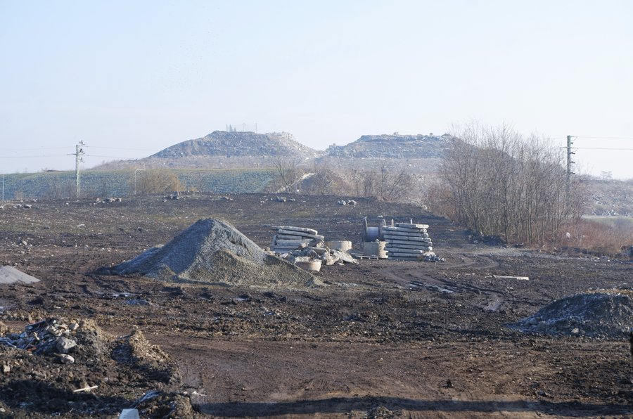
Ostrava-Hrušov, 2023. Foto: Kamil Czaiński / Wikimedia Commons / CC BY-SA 4.0
Druhý oddíl sbírky pojmenovaný „Chemie v zubech“ (1990) navazuje je příznačný pro svou tendenci vytvářet básně-portréty vybraných obyvatel Ostravy. V centru pozornosti zde stojí svět zobrazovaných postav, jejichž osudy jsou determinované jejich původem a životem v Ostravě. Ta je zde plasticky vyobrazena díky konkrétním toponymům, jako např. Přívoz, Hošťálkovice, ulice Vítězná a Fügnerova, nebo názvy
hospod (Sokolský dům, U Dlouhých, Sokolovna).
V každé básni-portrétu je představena jedna postava, „[…] jejíž portrét se v kontextu ostatních básní oddílu podílí na celkové charakteristice prostředí, společenství dělníků, pijáků alkoholu, kriminálníků, žen lehčích mravů…“. Tyto postavy jsou označovány vlastními jmény nebo přezdívkami, např. Marija Švačová, Josef Aparát, Maruna, Pečenáč, Pinďa, Pehák ad., které se mnohdy promítají i do názvu básní. Poezie
v tomto oddíle proto připomíná jakési lyrizované črty místních outsiderů, kteří jsou „ublížení ztracení mizející / alkoholičtí filosofové / v domácích trepkách / v kožených sukních / […]“, jako by právě alkohol byl tou nepřítomnější chemikálií, kterou je život každé postavy intoxikován.
Scelujícím principem tohoto oddílu je surová řeč postav, plná dialektismů („nebýt ta amnestyja / tak bysem scípla / […]“), vulgarismů či slangových výrazů, do níž proniká chemické názvosloví – jako by kontaminované, industriální prostředí Ostravy prosakovalo do myšlenek a následně řeči svých obyvatel. Chemické názvy jsou ve sbírce užívány poměrně často, a to jako metafory různých jevů každodenní, drsné reality – např. označují emoce postav („holka ve třetím měsíci tam bývalého odvrhla / nového si našla / v záři plamenů trochu romantiky / autokatalýza manganatými ionty / […]“), mezilidské vztahy („přezdívka Pinďa / jinak nepříliš mnoho informací / o jeho nejistém postavení ve světě / ostatně i jodometrické metody / jsou založeny na vratké reakci / […]“;„Pinďa se jak jod navrátil za mříže / táborák vesele hořel / oheň šlehal vysoko / až přikryj to manganistanem vole / […]“) nebo způsoby lidského jednání („Pehák už má dost / skelnatí a vykřikuje bludy / […] musí být co nejrychleji / zneutralizován roztokem
amoniaku / […]“). Lyrický subjekt zachycuje postavy především ve všednodenních situacích, zajímají ho události typické, profánní – jak píše Piorecký: „[…] relativizuje se tu
pojem normálnosti, čtenář poezie je nucen vystoupit z ‚věže ze slonoviny‘, je mu nabídnut pohled na drsný život dělníků, které poezie a jiné intelektuální výkony zhola nezajímají“.
Lyrický subjekt se s postavami ztotožňuje – ironizuje vědu, vyšší vzdělání, umění či samotné intelektuály („myšlenky hodné zaznamenání / nějakého zasraného PhDr / […]“) – stylizuje se do role nadindividuální entity kritizující soudobou společnost, jeho zájem se koncentruje na reprezentanty větší sociálních skupin, na jejich vyjadřování a všední
problémy, a proto se básně v tomto oddíle dají označit jako sociálně angažované, „[…] ale nikoliv na triviální rovině tezí a prvoplánové bojovnosti, jíž by báseň sloužila“. Samotný
Motýl se k této definici vyjádřil takto: „[…] zařadili mě k typu básníka, který vidí věci zdola, ale tak se necítím, je to škatulka.“
V kontextu Balaštíkova typologického kruhu nesouhlasíme s Hruškovým zařazením sbírky, a to na základě první oddílu, k reflexivnímu typu – ten navíc v rámci naší analýzy neuznáváme, neboť jej považujeme za nejasně vymezený. Lyrické subjekt je podle nás stylizován do portrétistického typu poezie věcnosti (je „osloven realitou“), a to především v druhém oddílu, jenž je tvořen poezií věcnosti. První oddíl svými stylistickými kontrasty, mýtotvorným charakterem a jazykovou i literární hravostí, které rozostřují význam, připomíná poezii imaginativní, kde se lyrický subjekt jeví jako herní typ.
Sbírka Šílený Fridrich odkrývá, že subjekt díla umí pracovat s více dimenzemi textu – parafrázuje, mytizuje stejně jako perzifluje – prostředkem pro otevírání významu mu je např. užívání veršového přesahu (enjambement), který do těsné blízkosti přivádí slova významově a syntakticky nespojená, např. „v mládí postřelen na útěku z vězení / […]“;„rozsekal ho na cement na padrť na pařez / […]“;„jako loňské sněhy jako
světla na nádraží / […]“; „Fridrich se jen zlobí kývá prstem / […]“ nebo „dítěte cigarety pětku na pivo knedlíček / […]“. V této literární hře lze spatřovat snahu o vyloučení jednoznačného a uceleného vnímání postavy Fridricha – „[…] demonstrování neuchopitelnosti toho určujícího principu, který vstupuje do lidských životů a promlouvá do dějinných pohybů […]“. Postmoderní tendenci v Motýlově tvorbě dokládá i Bielecký, který připomíná, že verše z Šíleného Fridricha zaznívaly z autorových úst na různých experimentálních, literárních čteních.
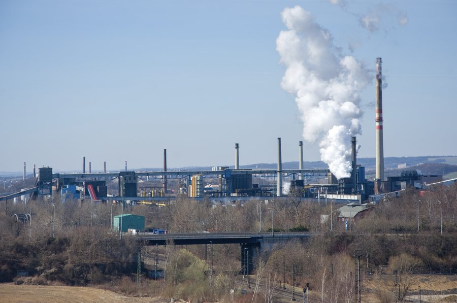
Koksovna Svoboda, Ostrava-Přívoz, 2014. Foto: Petr Štefek / Wikimedia Commons / CC BY-SA 3.0 CZ
Popisek Petra Motýla ke Koksovně a Kosmově
Koksovna Svoboda se za socialismu nazývala Koksovnou Vítězný únor a tvořila jeden podnik s Dolem Vítězný únor, který se po r. 1989 přejmenoval na Důl Odra. V sousedství a stínu těchto podničků v Ostravě-Přívoze na Kosmově ulici vznikla sbírka básní Šílený Fridrich. Ta sbírka se podle kritiků vyznačuje „pohledem zdola“. Inu, ty komíny, jak vidno z obrázku, jsou vysoké dost, vlastní koksárenská budova je monstrum, těžní věž dolu ční, nad aktivním průmyslem se tyčí haldy. A nad to všechno stoupá dým, kouř, pára a prach. No a já bydlel na Kosmově ulici v přízemi, dost dole. Z hlediska intelektuálního jsem si tak nepřipadal, pořád jsem četl, což mi zůstalo. Tušil jsem už ovšem, což jsem pak opravdu pochopil až po přestěhování do Prahy, že za intelektuála není považován ten, kdo pořád něco studuje a čte, ale ten, kdo má nějakou funkci, postavení, titul, významné příbuzné nebo známé nebo – či především - mediální či osobní prezentaci (jednotlivé jmenované kategorie mohou fungovat jako osamostatněné). A pak už je úplně jedno, co takový „intelektuál“ má v hlavě. Každopádně se dívá „svrchu“ anebo „z vrchu“, ne nahoru na komín...
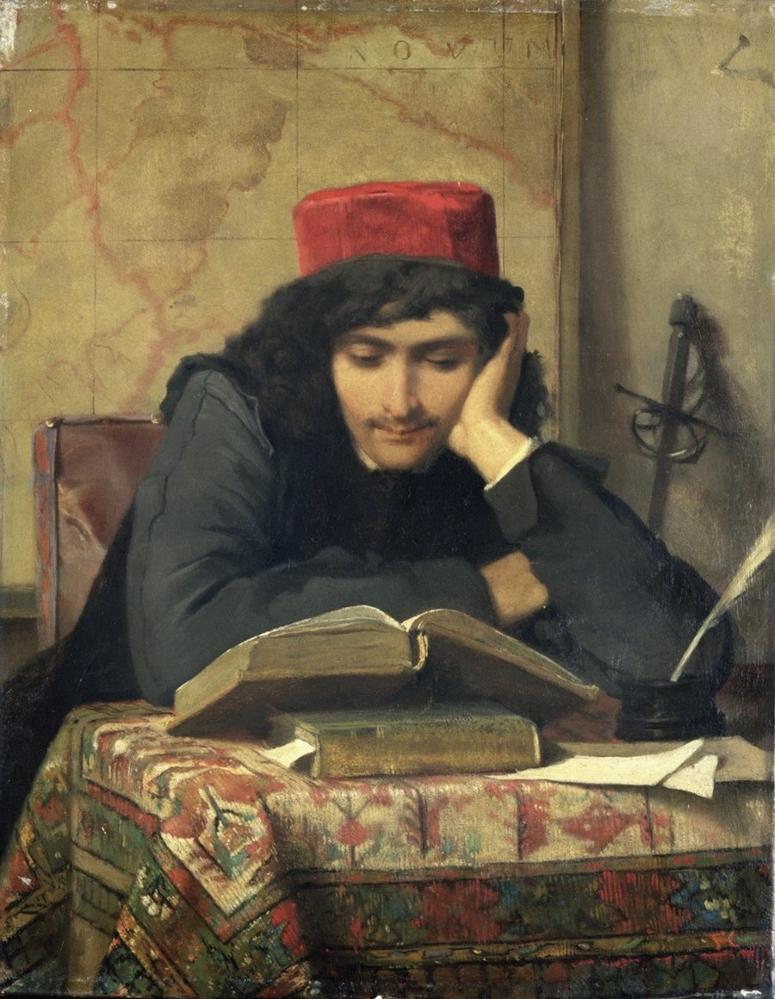
Fernand Heilbuth - Der Leser (1856). Public domain / Wikimedia Commons
Vasilios Chaleplis – doktorská práce
Struktury zakoušení a básnické obrazy (post)industriálního Ostravska v letech 1990–2024. Disertační práce. 2025.
portal.osu.cz/wps/portal/!ut/p/z1/lZBPC4JAEMU...
Katedra české literatury a vědy, Filozofická fakulta Ostravské univerzity ff.osu.cz/kcl/
Vasilios Chaleplis (*1993), organizátor (manažer) v oblasti literatury, nakladatel, básník, hudebník. Vydal sbírku básní Flavedo (2023).
Vasilios Chaleplis Šílený Fridrich
(výňatek z výše uvedené doktorské práce)
Šílený Fridrich (1992) je první knihou, kterou se v souvislosti s Motýlovými ostravskými sbírkami budeme zabývat. Sbírka je dělena do dvou relativně samostatných částí? „Šílený Fridrich“ s vročením 1989 a „Chemie v zubech“ pocházející z roku 1990. Lyrický subjekt celý svazek uvozuje epigrafem „Odehrává se v Ostravě – Přívoze a na okolní zeměkouli“ (Motýl 1992: 9), jímž vymezuje svoji oblast výskytu i zájmu, a zároveň přisuzuje jedné z městských částí Ostravy statut jakéhosi světa ve světě. Metaforicky řečeno se tak principem fragmentace (či v tomto případě archipelagizace) z Přívozu stává ostrov v celkovém souostroví Ostravska. Jeho vyčlenění v kontextu celé zeměkoule vytváří pocit prostorové i významové rozdrobenosti, z níž lze cítit napětí mezi lokálním a globálním. Přestože jsou mezi oběma sférami markantní rozdíly, zdá se, že relativizací jejich hierarchie a narušením hranic je subjekt klade na stejnou úroveň. Tato logika odráží postmodernistické tendence vytvářet soubor relativně autonomních a zároveň heteronomních a neustále se přeskupujících fragmentů nabourávajících univerzalistický princip jednoty a podtrhujících pluralitu významů. V takto rozdrobeném mikrosvětě se lyrický subjekt vyznačuje silně groteskním, místy až morbidně ironickým nazíráním na lidský život, který glosuje s notnou dávkou absurdity: „v mládí postřelen na útěku z vězení / v pokročilém věku taktéž / a teď / teď už bych střílel i já […]“ (Motýl 1992: 11) či „psycholožka Maruna / vyhrne si špinavou sukni / a vychčije se na rohu […]“ (Motýl 1992: 48). Motýlovy básnické reflexe jsou prostoupené typicky postmodernistickým synkretismem (přítomné jsou autobiografické, mytologické i alegorické autorské strategie), nesměřují však k vytvoření celistvého obrazu, ale naopak zůstávají v podobě neurčitých, nespojitých zlomků, které často nemají lineární souvislost. Toto schizofrenní míšení různých stylizací subjektu i motivů se projevuje také opakováním protikladných slov: „přijde mě zardousit nepřijde“ (Motýl 1992: 21); „ve stejně strašné Ostravě / […] ve stejně krásné Ostravě“ (Motýl 1992: 47). Jako typický příklad těchto principů uveďme báseň s názvem Niterné záležitosti, jejíž název evokuje titul z červené knihovny. Motivy „sladké nevěry“ záhy střídá pojednání o třicetileté válce, smilstvech a mordech. Lyrický subjekt je v této básni sice v pohybu, ale vyskytuje se ve zvláštním bezčasí. Cestuje trolejbusem – „stotrojkou tam a zpět“ (Motýl 1992: 11) – a v konfesijním monologu se přiznává, že lže a mystifikuje. Báseň působí pochmurně, obrazy navozují pocity bezvýchodnosti. V textu se sice objevuje pozitivní emoce (radost), ale pouze jako ironický přívažek spojovány s komunistickou hvězdou na šachtách, kterou subjekt vidí, když projíždí kolem hornické kolonie. Později pak v básni Slzy pro paní redaktorku píše, že Ostravě tuto hvězdu někdo nespecifikovaný ukradl, čímž přišla o svou záři (metaforicky chápanou jako telos, směr), což vede k „bloudění / ve starých známých ulicích“ (Motýl 1992: 47) – absence konativní dimenze stejně jako interpunkce ponechává osamocený subjekt (formálně i sémanticky) v bezudálostním stavu, kde může „pozorovat tvůj pád ve výtahu“, jako by se jednalo o nedokonavý děj, jako by pád mohl trvat věčně. Strnulost přítomného okamžiku a nemožnost nového představují leitmotiv celé sbírky projevující se také vulgárními obrazy, v rámci kterých je např. budoucnost metaforizována a ironizována jako pád opilců do hospodského záchodku: „jak sebou majzli na hlavu / do žlábku a do budoucnosti […]“ (Motýl 1992: 42).
V knize je výrazně demytizován a parodizován bezručovský metanarativ, a to právě prostřednictvím postavy šíleného Fridricha, který je tlampačem společenské deziluze a ve kterém se zrcadlí některé principy a vzorce postmodernistické struktury zakoušení86, jež jsou nezávislé na limitech individuálního lidského života: „píše se rok 1900 přesně nachlup“ (Motýl 1992: 16); „v roce 1620 dávno před objevením Ameriky / […] kde komunista prohrál / Fridrich trvá dál“ (Motýl 1992: 15). Sociální a smyslově vymezené každodenní zakoušení Ostravska devadesátých let, které nám subjekt svými kognitivními procesy zprostředkovává, je protkáno intertextuálními a mystifikačními poznámkami z kroniky o Fridrichovi, které umocňují dojem časové neohraničenosti a toho, že život na Ostravsku pozbývá účelu i směřování. Fridrichův nadosobní charakter odráží kolektivní naladění obyvatel Ostravska včetně jejich povahy, postojů a svéráznosti: „ten hrozný duch všude pronikající / pouhým pohledem / a zděšené matky zří jeho strašnou podobu / ve svých novorozencích“ (Motýl 1992: 16). Postava Fridricha je rovněž prostředkem demaskování dřívější hornické tradice a nucené pospolitosti za socialistického režimu. Dochází k diskontinuitě mýtu, přerušení jeho zdánlivě cykličnosti. Zatímco lyrický subjekt Jana Vraka ve sbírce Ostrava prochází stavem připomínajícím šílenství, jenž je interiorizací společenského chaosu devadesátých let, Motýlův subjekt své šílenství materializuje v postavě šíleného Fridricha, za jehož osobního kronikáře se považuje: „zrovna píši čtvrtý díl Fridrichových dějin“ (Motýl 1992: 11). Ačkoli byl Motýlův lyrický subjekt dlouhodobě vystaven „řádění“ šíleného Fridricha a děsí se jej, tímto estetickým (disociačním) manévrem vytvořil pomyslný symbolický mezičlánek (postavu Fridricha) mezi sebou a samotným prostředím Ostravska. To mu umožnilo udržet si od města a jeho naturelu odstup a pomohlo mu vytvořit podmínky pro pozdější zpřetrhání pout. Jako reziduum Fridrichova působení lze považovat fascinaci různými outsidery, rváči, baraby, vyděděnci a machry na okraji společnosti, jejichž osudy tematizuje i v pozdějších, „ne-ostravských“ sbírkách.
Připomeňme, že v textu na klopě sbírky se kromě inspirativních vlivů Petra Bezruče, jehož kult Motýl částečně ironizuje, upozorňuje ještě na Ivana Wernische (paralela mezi postavou šíleného Fridricha a Wernischova Bedřicha) a beat generation (podobnost mezi Ginsbergovým Molochem z Kvílení [1956] a Fridrichem). Právě kombinace nihilismu a cynismu s beatnickou rozevlátostí, odmítání konzumerismu a tělesnosti, se objevuje zejména v druhé části sbírky nazvané „Chemie v zubech“. Také v tomto oddíle je prostor města zachycen jako cizí a odpudivý, v obrazech je přítomná fascinace psychopatologickými jevy, která souvisí se zájmem o životy místních outsiderů a s ironizací vyššího vzdělání a intelektuálů („myšlenky hodné zaznamenání / nějakého zasraného PhDr“, Motýl 1992: 48). Hlavním estetickým principem je metaforizace různých jevů každodenní reality s pomocí chemického názvosloví, „jako by prostředí industriální aglomerace prosakovalo do nitra lidí, zasahovalo jejich myšlení a jazyk“ (Piorecký 2011: 128). Subjekt přitom užívá vzorec dekonstrukce a je natolik důsledný, že na chemické procesy rozkládá např. i emoce: „holka ve třetím měsíci tam bývalého odvrhla / nového si našla / v záři plamenů trochu romantiky / autokatalýza manganatými ionty“ (Motýl 1992: 37). Rovněž pracuje s podivností a s pomocí expresivního stylu demaskuje bezútěšnou realitu včetně ustanovující se vlády peněz a procesů, kterými je konstruována. V průběhu knihy je čtenář „neustále znejišťován, psané slovo mu není oporou, ale šalbou“ (Piorecký 2011: 128), přičemž se mu neotevírá „intimní prostor subjektivity“ (Piorecký 2011: 128), ale realita Ostravska včetně jejích obyvatel. Poslední dvojverší lyrického subjektu estetizuje pocity deziluze a marnosti bez vyhlídky na zlepšení: „jen tma / všudypřítomná tma zůstává“ (Motýl 1992: 50).
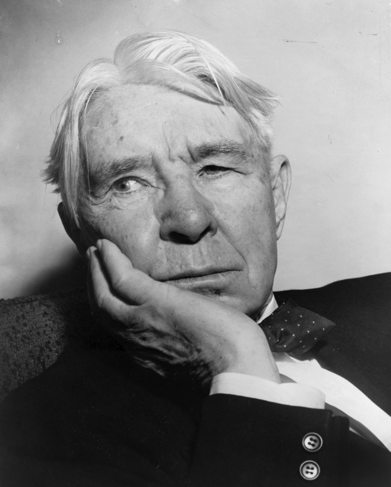
Carl Sandburg, autor sbírky Ocel a dým. Foto: Al Ravenna / Wikimedia Commons / Public Domain
cs.wikipedia.org/wiki/Carl_Sandburg
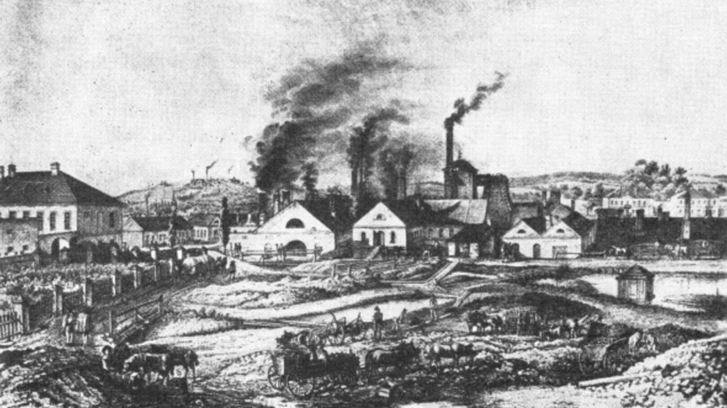
Ostrava-Vítkovice, 19. století. Public domain / Wikimedia Commons
Karel Piorecký Technika básnického portrétu
Petr Motýl a poetika věcnosti v mladé poezii 90. let
Časopis Tvar, ročník 2007, číslo 18
old.itvar.cz/prilohy/107/18TVAR_07.pdf
Karel Piorecký (*1978), literární vědec, historik a kritik. Pracuje v Akademii věd, v letech 2008-2019 působil v AV jako zástupce ředitele Ústavu pro českou literaturu. Autor knih Česká literatura a nová média (2016) a Česká poezie v postmoderní situaci (2011), spoluautor (z ½) knih Kultura neuronových sítí (2024) a Praha avantgardní (2014).
cas-cz.academia.edu/KarelPioreck%C3%BD
Ústav pro českou literaturu: digitalhumanities.cz/ustav/ucl/
Karel Piorecký Chemie v zubech
(výňatek z výše uvedeného textu Karla Pioreckého, pasáž týkající se sbírky Šílený Fridrich)
Sbírka Šílený Fridrich se skládá ze dvou relativně samostatných částí – první a titulní část Šílený Fridrich je opatřena vročením 1989, druhá část je nazvána Chemie v zubech a pochází z roku 1990. Nástrojem spojení obou částí je věta umístěná na samém počátku knihy a vztahující se k oběma jejím částem: „Odehrává se v Ostravě-Přívoze a na okolní zeměkouli.“
Zmiňovaná věcnost založená na technice básnického portrétu je realizována až ve druhé části sbírky, titulní oddíl sice rovněž směřuje k vytvoření portrétu postavy nazývané Fridrich, ale zároveň subjekt těchto básní manifestuje nemožnost definování a portrétování postavy, která je spíše než fikční bytostí abstraktním principem nezávislým na prostorových a časových limitech. Fridrich tedy není básnickým portrétem v pravém slova smyslu a vůbec ne projevem básnické věcnosti, jedná se spíše o alegorii, která mluvčímu slouží jako prostředek k analýze dějin ostravského regionu, resp. principu zla, který těmito dějinami prostupuje.
Chemie v zubech (1990), druhý oddíl sbírky, zachovává distanci mezi fikčními subjekty, resp. mezi lyrickým subjektem a zobrazovanou realitou. I zde není v centru pozornosti intimní prostor subjektivity promlouvajícího já, ale spíše objektivní realita zobrazených postav. Subjekt tu ovšem nesleduje jednu postavu (jako v případě Šíleného Fridricha), která by zároveň vytvářela konstrukci celku, ale každý text věnuje jiné z charakteristických figurek regionu. Oním scelujícím principem je tentokrát řeč zobrazených postav, do jejich idiolektů totiž proniká chemické názvosloví, jako by prostředí industriální aglomerace prosakovalo do niter lidí, zasahovalo jejich myšlení a jazyk. Řeč lyrického subjektu se zřetelně nevyděluje od řeči postav, i do ní proniká jazyk chemie. V myšlení subjektu vznikají analogie mezi chemickými procesy a životem lidí: „přezdívka Pinďa / jinak nepříliš mnoho informací / o jeho nejistém postavení ve světě / ostatně i jodometrické metody / jsou založeny na vratké reakci (....) / Pinďa se jako jod nevrátil za mříže“. Dezorientované postavy čekají „na všeobecné vysvětlení / s jasným chemickým složením“.
Upozadění subjektivity mluvčího, charakteristické pro poezii věcnosti, zde ústí až k rozvržení celé sbírky jako sledu básníportrétů, tedy v každé básni je představena jedna postava, jejíž portrét se v kontextu ostatních básní oddílu podílí na celkové charakteristice prostředí, resp. společenství dělníků, pijáků alkoholu, kriminálníků, žen lehčích mravů... Subjekt se představuje jako sběratel příběhů. Samy zobrazované postavy a jejich načrtnuté osudy mají mít schopnost uměleckého účinku, jde o postavy, jejichž život je naplněný základními otázkami, o postavy, které žijí tyto otázky a problémy v naprosté konkrétnosti, např. pojem svoboda je pro ně odvozován od svého protikladu, jímž je vězení a výkon trestu.
Věcnost metody básnického portrétu je podpořena důsledným označováním postav vlastními jmény nebo přezdívkami. (Marie Kubínová ve studii Cesty básnické obraznosti označuje právě vlastní jména za jednu ze základních textových manifestací básnické věcnosti. Studie vyšla v kolektivní práci Pohledy zblízka roku 2002.) Užití přezdívek implikuje neformální, lidové prostředí, do něhož jsou postava i lyrický subjekt situováni. Subjekt tak také manifestuje svou znalost zobrazeného prostředí a lidí. Je to svět, kde si lidé povídají, sdílejí své problémy, je to svět lidské blízkosti. Znakem oné blízkosti je právě konkrétní jméno a přezdívka.
Na lexikální rovině je věcnost Chemie v zubech založena také na již zmiňovaném užití chemického názvosloví a také na lexikální stránce řečových gest zobrazených postav, jejichž jazyk těží v podstatné míře z nespisovných rovin češtiny, nevyhýbá se vulgarismům, slangovým výrazům a také dialektismům. V promluvách lyrického subjektu je frekvence prvků nespisovnosti nižší, subjekt častěji volí jazykové prostředky ze spisovné, literární a také administrativní stylistické roviny (např. neprodleně, nepříliš mnoho informací, podotkl). Přímá řeč postavy není označena, ocitá se v bezprostřední blízkosti popisů lyrického subjektu a chemických výrazů – stylistická pestrost, kolážovitost a zároveň odpor ke klasickým narativním postupům přehledně oddělujícím pásmo vypravěče a pásmo postav patří k charakteristickým rysům tohoto oddílu. Lyrický subjekt se i těmito jazykovými prostředky snaží vybudovat plastický obraz prostředí a společenství lidí průmyslové Ostravy.
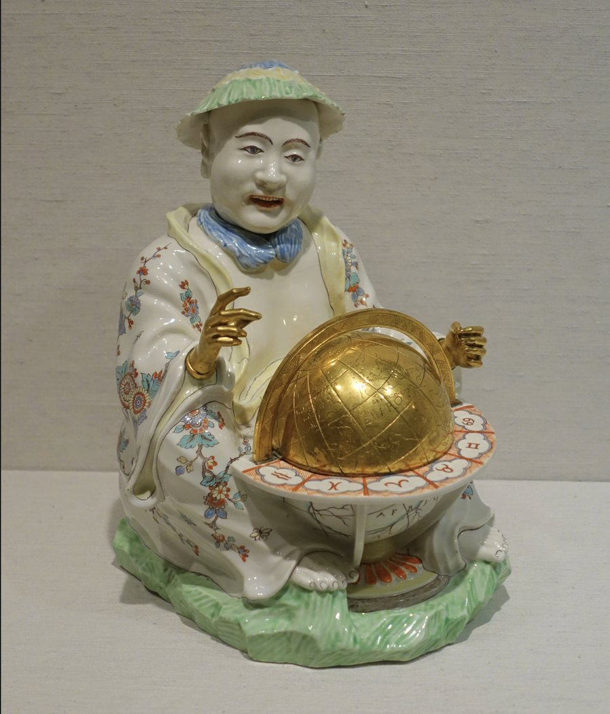
Fridrich vyhledává v roce 1735 Ostravu-Přívoz na okolní Zeměkouli. Public domain / Wikimedia Commons
Jakub Záhora
Ostrava v básních Petra Motýla, Petra Hrušky a Jaroslava Žily
Bakalářská diplomová práce, Masarykova univerzita 2011
is.muni.cz/th/jyh0r/Jakub_Zahora_-_bakalarska...
Jakub Záhora (*1988), bohemista. Působí v Ústavu české literatury, dále na Masarykově univerzitě v Brně a na Slezské univerzitě v Opavě.
www.muni.cz/lide/333224-jakub-zahora/publikace
Jakub Záhora Šílený Fridrich
(výňatek z výše uvedené diplomové práce)
Šílený Fridrich Petr Motýl přítomnost Moravskoslezského kraje ve svých verších přiznává již některými názvy sbírek, a sice Jazykem haldy, Černá pěna Ostravice a Kam chodí uhlí spát. Přestože se nám v nich dostává jen jediného zeměpisného jména (řeka Ostravice), z kontextu a obecného povědomí tušíme, kterým regionem se bude autor zabývat. To se čtenáři ostatně potvrdí po přečtení několika prvních stran knih. Zmíněnou trojici doplňuje ještě jedna, „ostravská sbírka“, která nese titul Šílený Fridrich a byla z nich vydána nejdříve.
Již v prologu tohoto díla se čtenář dozvídá následující: „Odehrává se v Ostravě-Přívoze / a na okolní zeměkouli.“ Konkrétní městská část je tak hned v prvním textu knihy čtenářovi předkládána jakožto střed Země. A také básně dále ve sbírce tuto pozici Ostravy dokládají, není zde zmíněno žádné další místo jak v republice, tak i na zbytku planety.
Čtenář se s Ostravou setká např. ve čtvrtém textu, nazvaném Ondráš Magdonem podpíraný: „v bartovské harendě i v harendách jiných / Fridrich v podobě vlka vstupoval / psa s červenýma očima plameny a žár / i jiné zlé kousky / v dobách průmyslové revoluce vyváděl / a v dobách stavby železnic snad ještě víc“. Lyrický subjekt, představený již názvem knihy, a protagonista v těchto místech nešetří chudé ani bohaté obyvatele, je to postrach „pánů ze Slezské a pomahačů“ a harendu někdy udělal šťastnou, jindy ji pro změnu nechal vzplanout plamenem. V obou citovaných úsecích Motýl odkazuje na svého předchůdce, Petra Bezruče.
Popisovaná lokalita je dost neurčitá, přímo závislá na činech a náladě Fridricha, ostatně stejně jako zbytek města, který je všemocným a všepřítomným duchem bezvěkého subjektu až přesycen. Fridrich Ostravě vládne, také „všechny děti z v Přívoze / jsou jeho“, což se nelíbí místním, kteří jej chtějí zabít (Nenadálé podobnosti).
Napřed se však Fridrich musel narodit. Trocnovská ulice, kde se tomu tak stalo, je v básni Fridrich a porucha proudu pokryta kalužemi, zapadanými „žlutým listím / a útržky starých novin“, a jsou v ní také vlci. Ulice je temná „jako hroby templářů / jako křídla havranů“, je to kout plný žlutého listí, ostatně tato barva je jediným náznakem světla v této „čtvrti bez světel“.
Fridrich nakonec z města odchází na soutoku Odry s Ostravicí, kde „padá podzim na dno řeky“, mlha do trávy, kolem jsou kalová jezírka a nedaleká dusíkárna (Soutok Odry s Ostravicí). Společně s ním opouštíme první část sbírky, kde byly ostravské reálie podzimní, tmavé, zakalené a vesměs nepříjemné.
Ani v druhé části Chemie v zubech se však pohled na Ostravu výrazněji nemění. Hned v úvodním textu Pošetilé připomínky se setkáváme s Pečenáčem, jenž „skládá-li uhlí které sám vytěžil z haldy / křičí až někam k Hlavnímu nádraží / až k Hlubkovi16 ať mu točí / šestatřicet dvanáctek / k utlumení pocitu života“, zatímco nedaleko halda dýmá a kolo se otáčí v těžní věži. Zpátky v Přívoze Na rohu Fügnerovy ulice „papíry vypadávají ze zdi“ na hlavy bez nálady u politých hospodských stolů, „rychle prvních pět piv / prach na plicích i na ulici“, jako styk sedliny s roztokem. Není pak ani moc divu, že je zde pochmurná nálada: „na Sokolském domě / večerním časem / než veselo / spíše smutno“. Už po ranní směně se místní „válí v blátě na zastávce / úplně ožralí“, a to jsou teprve dvě hodiny odpoledne. Z dolu Vítězný únor „se už hrnou / mokré vlasy po ranní“, pracovníci, zatímco „těžní věž září novým nátěrem / v očích propasti / blbečci z Prahy / smějí se a sklapne jim / ba ne nikdy jim nesklapne“, poměřují Ostravané své poměry s hlavním městem, kde místní „vezou se v metru nebo mercedesu“ a „užívají si denního světla“ (vše Po šichtě).
Přívoz explicitně přiznává také další text, v němž už podle názvu je Za okny bílá tma. Uvnitř bytu se tvoří láska, „postel vrže vrže vrže“, a nad ním se rozprostírá přízračné zvíře, modrý kůň se zlatou hřívou, který v podobě deště z rozbouřeného nebe padá „na střechy a na představy“ místních.
Lyrický subjekt z básně Slzy za paní redaktorku pak zapne ovládání „zbytečného výtahu / ve stejně strašné Ostravě“, dívaje se přitom na chemický závod z Hošťálkovic ze staré Prajzské ulice, kde stromy voní po oleji a kde lze spatřit žlutý a červený dým, najednou „ve stejně krásné Ostravě“, okradené o hvězdy na šachtách. To, co nakonec zbylo, je „koncentrace roztoků beznaděje / bloudění / ve starých známých ulicích“ napůl strašného a napůl krásného velkoměsta. Místní možná právě tento pocit musejí přebíjet alkoholem, pak se probouzet brzy ráno s bolestí hlavy, jako tomu je v básni Každý den svátek. Na bolest pomůže jen „popadnout džbánek a v šest ráno / už otevřeli u Dlouhých“. Až po pivu se hlava lyrického hrdiny básně uklidní a s koncem textu kolem „jen tma / všudypřítomná tma zůstává“.
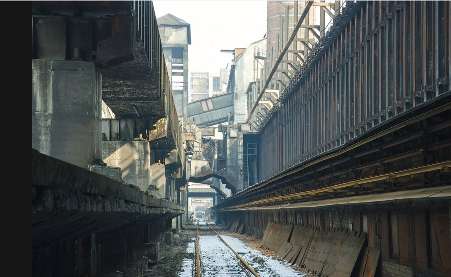
Koksovna Šverma, 2011. Foto: Petr Štefek / Wikimedia Commons / CC BY-SA 3.0 CZ
Literární slovník severní Moravy
Iva Málková, Svatava Urbanová
Votobia, 2001
dokumenty.osu.cz/ff/ceres/publikace/literarni...
MOTÝL, Petr
básník, prozaik
* 26.8. 1964 Klatovy
Otec Günter M. (1940), novinář, básník, matka Hermína M. (1944), dramaturgyně, scenáristka ostravského Divadla loutek, bratr Ivan M. (1967), publicista, básník.
Absolvoval gymnázium a Pedagogickou fakultu v Ostravě (obory český jazyk - dějepis, 1988. Diplomová práce Názvy ostravských podniků a institucí). Během studia se podílel na autorském divadle Barák (mimo jiné představení Sprcha na modro).
Učitelskému povolání se nevěnoval, pracoval jako poštovní doručovatel, vrátný, topič, měřič a čerpač vody.
V 90. letech spoluorganizoval ostravské Literární Harendy, s bratrem Ivanem inicioval vznik časospisu Modrý květ.
Debutoval v nakladatelství M.U.K.L. sbírkou Ten veliký veliký kamenný dům nebo hrad tam daleko daleko v horách (1990). V jeho textech se objevují motivy každodenní reality Ostravy, otevřenost a nonkonformnost. Sbírka Šílený Fridrich (1992) reflektuje Bezručovy Slezské písně, vyjadřuje autorský protest k uměle vytvořeným mýtům, provokuje adorací šedi, která připomíná dokument o životě „dělníků, krimošů a ožralů“.
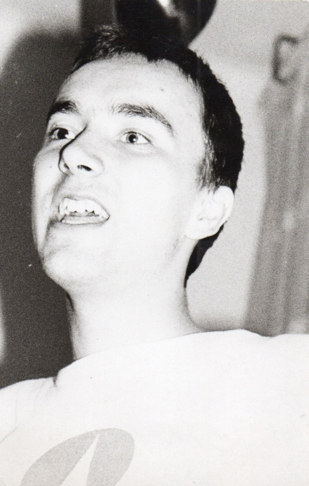
Petr Motýl ve střihu Vojenské katedry. © Ladislav Krajča
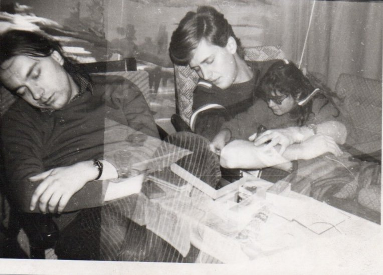
Petr Motýl v posledním ročníku fakulty. © archiv autora
Petr Motýl Dvě fotky
Na ostřihané fotce jsem před představením studentského divadélka Barák (anebo přímo při něm?). Amatérským divadlem nebo možná divadlem obecněji se na konci socialismu prezentovat šlo a leccos tam prošlo. Naopak vydat oficiálně básně bylo strašně obtížné, skoro nemožné. Autor by musel učinit značné ústupky režimu. Ani ne tak přímo ve verších, psala se osmdesátá léta, ne padesátá, ale vydání knížky bylo podmíněno nějakou formou spolupráce s režimem. Nemuselo jít rovnou o kontrakt s estébé, ale jen tak to zkrátka nebylo. Ve studentském divadle na naši partičku, ani na kolegy z jiných studentských divadel, pokud vím, se žádný přímý nátlak nekonal.
Vlasy mám krátké, jelikož jsem docházel na tehdejší „vojenskou katedru“ při vysoké škole, která nahrazovala rok vojny v terénu. A na sobě mám tričko s nápisem Liptovská Mara, což se mi líbilo kvůli básnické skladbě Robinsona Jefferse Mara. Ale tu souvislost si asi málokdo dal dohromady.
Na druhé fotce jsem se spolužákem, k němuž jsem spadl v posledním ročníku, po přerušení studia a návratu na hanebnou Pedagogickou fakultu v Ostravě. Dvojexpozicí je foceno jakési mimoškolní setkání spolužáků z ročníku, jakých nebylo moc. Možná Vánoce?
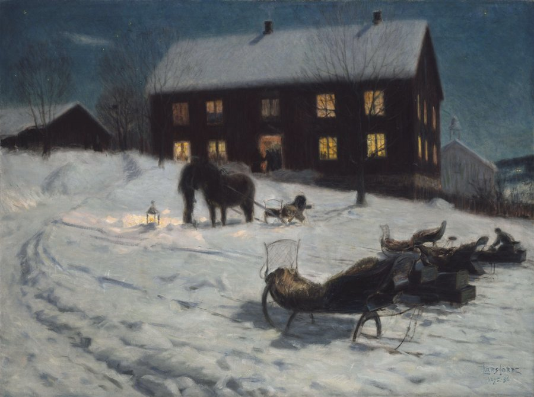
Lars Jorde – Christmas Party, 1896. Norway National Museum of art.. Public domain / Wikimedia Commons
Totiž... Na začátku devadesátých let jsem netušil, ale v čase tvorby těchto stránek mám k Norsku dlouholetý vztah, žije tam můj syn a vnuk. Ale je to obrázku pěkný vánoční večírek, řekl bych. Petr Bezruč i Šílený Fridrich se také účastní...
Jakub Bielecki
Básnická tvorba Ostravy 90. let
časopis Tvar, rok 1996, číslo 19, strana 6
(výňatek)
archiv.ucl.cas.cz/index.php?path=Tvar/7.1996/...
{kind=link}
Jakub Bielecki (*1975), v mládí básník a autor textů o literatuře, vystudoval bohemistiku na Slezské univerzitě v Opavě. Od roku 2019 je ředitelem divadla v Lounech.
Svým, nutno podotknout, že velmi originálním způsobem navázal na Bezruče i ostravský Petr Motýl. Sbírka Šílený Fridrich vyšla v edici Ladění Mladé fronty v roce 1992. Motýl zde pracuje s motivy běžného života, převrací a hyperbolizuje lyrický subjekt ve snaze vytvořit jakýsi nový básnický mýtus. Bezručovské bardství, strnulou víru v rodný kraj a hrdost na něj karikuje obsahem. Kde jde Bezručovi o výhružku, varování, staví Motýl škleb a výsměch. Pro svůj záměr stvořil fiktivního, nesmrtelného hrdinu Fridricha, který je „svítícím postrachem pánů ze Slezské a pomahačů“. Bezručovskou formu vyplňuje Motýl současnou myšlenkou. Přitom klasika neznásilňuje, pouze využívá zažitého kultu. Soustředí se na vypjatou, přesto hravou provokaci prostřednictvím veršových i strofických citací. Že jde o účinnou cestu, dokázal Motýl i na svých experimentálních recitačních performancích, kde vystupoval v podobě tajemné postavy, jakési slezské Valkýry a chrlil na posluchače historky z Fridrichova života.
V Motýlově tvorbě najdeme mnoho různých vlivů, kromě Bezruče je tu bezesporu i Wernisch, punc originálu jí však dodává autorova bezbřehá imaginace – pohybujeme se světem slezských harend a hald, rozmlouváme s fantastickými přízraky zhmotněnými básníkovou obrazností. Poznáváme Ostravu magickou v její šedi a průměrnosti. Text, jako jeden z mála, přiznává, dokonce s jakousi obskurní hrdostí, návaznost na ovzduší minulých let. Motýl ví, že i on byl nutně spolutvůrcem naší společné reality, chápe, že nelze zapomenout, a snaží se s ní vyrovnat. Řečeno slovy Vladimíra Macury: „...svět socialismu jako sémiotický konstrukt nemůže být chápán jako něco útěšně vnějšího...“ (Vladimír Macura: Šťastný věk)
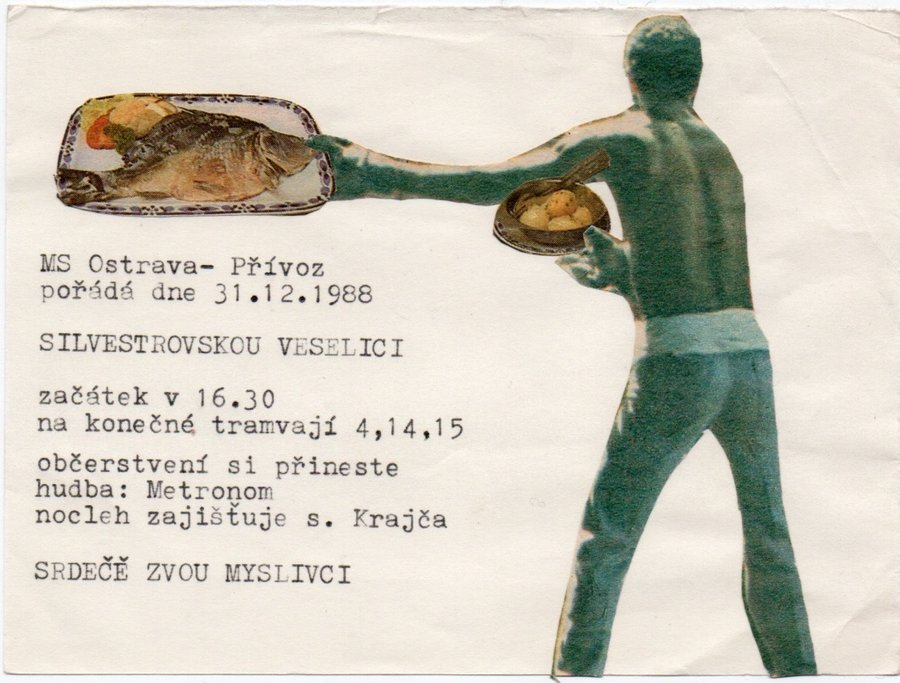
Experimentální performance, 1988. © archiv autora
Petr Motýl Ostravští literáti v osmdesátých letech
Něco málo bych rád dodal... Ostravští literáti, kteří se prosadili v 90. letech, už nebyli úplně mladí, ale ta opravdu mladá generace se v Ostravě v 90. letech v literatuře neobjevila, myslím tím autory rokem narození v 70. letech nebo alespoň na úplném konci 60. let, jako jsou v Praze působící Petr Borkovec a Jaromír Typlt nebo Zlíňáci svázaní s Brnem Martin J. Stöhr a Pavel Petr.
V 80. letech většina ostravských literátů studovala na Matičním gymnáziu, tehdy gymnáziu dr. Šmerala. V textu o mém překladu Skořicových krámů Bruno Schulze jsem se o tom na těchto stránkách zmínil, ale nepřesně. Ona by ta zmínka stačila, nepřesnost sem, nepřesnost tam, smysl zůstává. V zásadě jde o to, že se budoucí spisovatelé na gymnáziu, které studovali, neznali. V ročníku byly čtyři třídy, takže na Ostravu normální gympl. Všude kolem ostravský komunismus. Na gymnáziu žádný češtinář(ka), který by pochopil, že budoucí ostravská literatura sedí ve školních lavicích. Ve školní knihovně je mrtvo.
Jan Balabán a Jaroslav Žila byli spolužáky ve třídě v letech 1976 – 1980. Petr a Pavel Hruška byli spolužáky ve třídě v letech 1978 – 1982. Petr Motýl studoval v jiné třídě než bratři Hruškovi rovněž v letech 1978 – 1982. To jsem byl já. Když jsem odmaturoval, nastoupil do prvního ročníku můj bratr Ivan Motýl a také Milan Krupa.
K seznámení těchto osamělců došlo až začátkem roku 1989, ve vinárně U Sudu na Stodolní ulici. Bratři Hruškové a Milan Krupa se vlastně přidali až po Listopadu 1989, ale to už je detail. Nebo není? V tu dobu jsem už byl z Ostravy odstěhovaný do Prahy, tak už jsem nebyl úplně Ostravák. Do Prahy jsem se vydal se záměrem žít tam v létě roku 1989 a v roce 2026 ještě v Praze pořád jsem. Do poloviny devadesátých let jsem Ostravu navštěvoval často a pořád jsem se nějak za Ostraváka považoval, dokonce jsem se na několik měsíců do Ostravy vrátil a vydával jsem s bratrem Ivanem časopis Modrý květ a spolupořádal jsem s ním ostravské Literární harendy. Ale právě kolem Modrého květu a Literárních harend, do kterých se vecpal Petr Hruška, nastala taková situace, že jsem to s osobní účastí v Ostravě po polovině devadesátých let ukončil. Byla to samá intrika a mocenský boj. Neměl jsem vlastně důvod se toho zúčastnit. Občas jsem do Ostravy i tak přijel, v Hlučíně u Ostravy žili rodiče, ale vždycky nastal nějaký problém. A tak je to doposud.
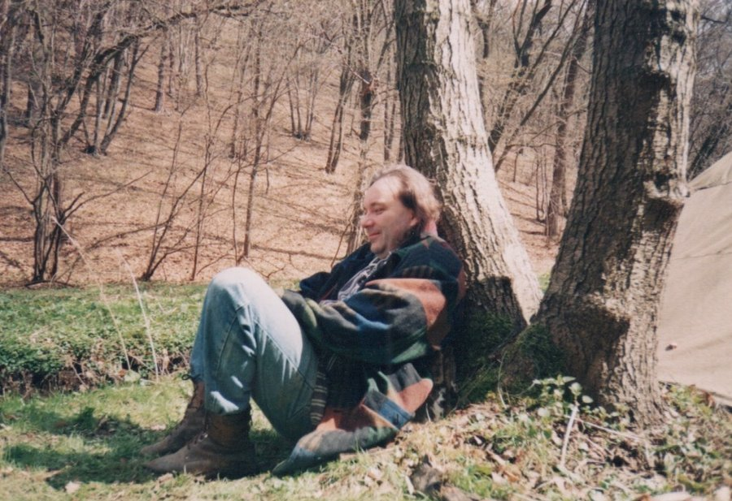
Měl jsem představu, že odejdu do lesa. © Ivana Motýlová
... což jsem po polovině 90. let také učinil, jednou nohou jsem ale zůstal ve vsi na hranici Prahy...
Roman Polách v Revue Prostor, 23. 7. 2022
(výňatek z texu o knize Marka Pražáka Hallada o Olejovém městě)
revueprostor.cz/rekomando-romana-polacha
Roman Polách (*1986), bohemista působící na Ostravské univerzitě. Vydal tři sbírky básní.
Prostor tzv. ostravské poezie je literárně historicky zatížen nejenom generací 90. let, kdy vydali své první básnické knihy Petr Hruška, Jaroslav Žila či bratři Motýlové, ale je rovněž mnohdy fatálně postižena kvůli historicky zneužívané a ideologicky dezinterpretované bezručovské tradici, jež volně přešla bez větších obtíží z normalizační prostředí do další výuky na základních a středních školách.
Velikost Bezručova gesta není jen v onom angažovaném rebelském gestu, kterým zásadně upozornil na existenční potíže lidu ve svém kraji, ale také v originálním syntetismu Bezručovy poetiky — ve Slezských písních totiž Bezruč koncentroval vlastně to nejlepší z poetiky české moderny přelomu století. Z realismu převzal prudkost a odvahu politického časového gesta, které ještě zatížil na mnoha místech pohrdavou macharovskou ironií, ze symbolismu si vypůjčil ony březinovské titánské symbolizující postavy, jež si ovšem upravil pro své specifické prostředí, aby pro pekelné prostory dolů využil (podobných) dekadentních autostylizací ať už jednotlivců nebo postav—zástupů. Konečně pak v realistických intencích vytvořil velice živou literární mapu areálu, v němž žil. Bezručovská takřka mytizující autostylizace byla snad ještě zásadnější než ona klasicky dekadentní, neboť umožnila ukotvení této subjektové pozice ze schopenhauerovského idealismu tzv. na zem. Tohoto bezručovského gesta se pak takřka o sto let později chopil Petr Motýl ve sbírce Šílený Fridrich (1992), k němuž přidal rovněž obrazy tehdejší normalizací zdevastované Ostravy počátku 90. let a spojil toto osobité ztvárnění Bezruče s jistou svébytnou návaznosti na poetiku Ivana Wernische.
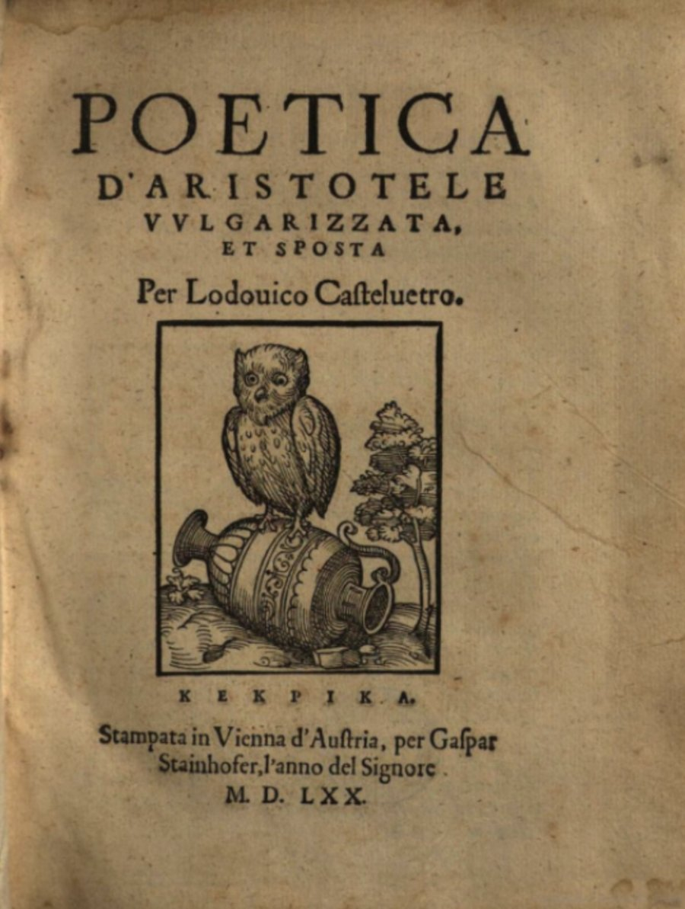
Poetica. Public domain / Wikimedia Commons
Petr Motýl Šílený Fridrich a Ivan Wernisch?
Krátké spojení. Elektrický zkrat. Proud neprochází básnickou sbírkou, ale přímo od jednoho elektrického zdroje k druhému. Od Ivana Wernische k Petru Motýlovi.
Nejbližší viditelný spotřebič: básnická sbírka Ten veliký veliký kamenný dům tam daleko daleko v horách. V té je Wernischova proudu opravdu hodně. Zdroj je zřejmě nevyčerpatelný a zdarma přístupný všem – energetikův sen, kapitalistova noční můra.
Tak nějak... V Šíleném Fridrichovi žádný ohlas na poezii Ivana Wernische ne a nemohu najít. Ve sbírce Ten veliký veliký kamenný dům tam daleko daleko v horách jsou wernischovských ohlasů přehršle, látra a tucty.
I posléze byla moje poezie dílem Mistra na Malvazinkách ovlivněna, někdy hodně. Ale v některých sbírkách, jmenuji jako exemplární příklad Lahve z ubytovny, vůbec ne.
S Ivanem Wernischem jsem se vídal v letech 2020 – 2024 pravidelně v pražské čtvrti Malvazinky. Bylo to pěkné...
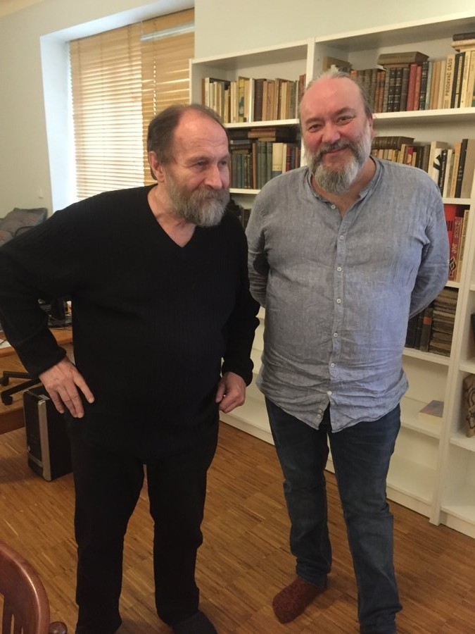
Malvazinky, jaro 2020. © Ivana Motýlová
Šárka Nevidalová
Kruhový let Petra Motýla
Výňatek ze studie v rubrice Margiana v časopise Host, ročník 1997, číslo 7, strany 103-107
ndk.cz/view/uuid:36412020-94a2-11e7-ac0d-5ef3...
Šárka Nevidalová-Zelinská, literární kritička, redaktorka, publicistka a editorka, překladatelka ze slovenštiny.
Šílený Fridrich
Záměrně jsem přeskočila Motýlovu druhotinu Šílený Fridrich (Mladá fronta, Praha 1992). Chci totiž popsat její „přechodovost", a to půjde snadněji, když budeme vidět, kam vlastně „došlápneme“. Oním mezikrokem je zejména první část sbírky, oddíl nazvaný Šílený Fridrich. Vystupuje zde mýtický postava šíleného Fridricha, který se potuluje ostravskými periferiemi, promlouvá z časů minulých, přítomných i budoucích, je prorokem, legendou. Básník se několikrát do podoby Fridricha stylizuje, jeho ústy vysloví své trpké osobní pocity, které nechá naplno rozeznít až v části druhé, pojmenované Chemie v zubech.
Jak už jsem řekla, Fridrich je postava „neuchopitelná“, nezařaditelná, a přesto se už pohybuje v konkrétním prostředí. Tajemná atmosféra (v Motýlově prvotině) je nyní oslabena použitím regionálních reálií, nicméně stále ještě existuje.
Druhý oddíl sbírky se už podobá sbírce Jazykem haldy; hledání přetrvává, obavy se ale mění ve vzdor, útěky ve zlost a prchlivost, beznaděj maskuje subjekt křikem, později nastupuje únava z bezmoci (naplno ve sbírce Jazykem haldy). „ (...) / vyvěš si červený kříž / Sobková / vyvěš si klidně i zelený / ověřím si kalibraci / a oplachuji nálevku vodou / tobě do břicha / nacpu kamení za pár let (...)“ (s.47).
Jak frekventovaná jsou ve sbírce slova zbytečný, umirající, nikam, nikdy, nikde, nic, nikdo, velmi časté je užívání předpony ne-, básník kdekoho a kdeco neguje...
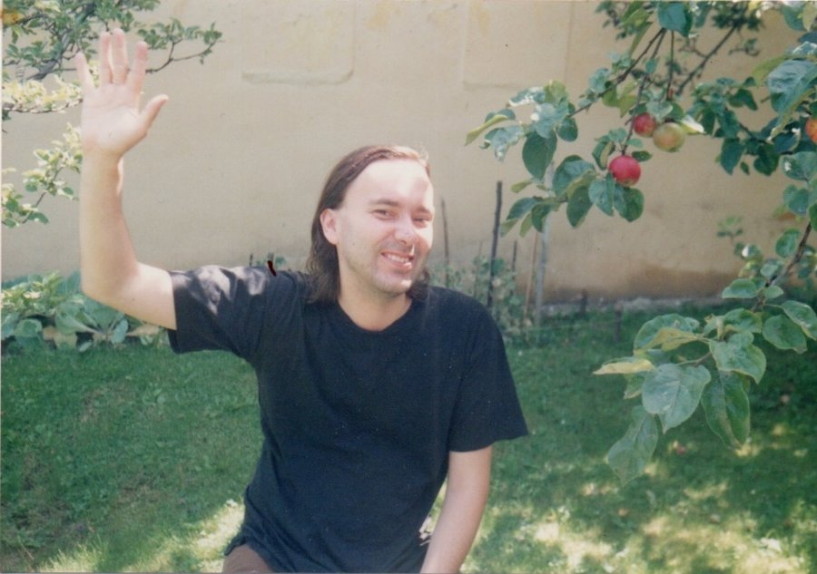
Chudenice, 1992.. © Helena Šmídová
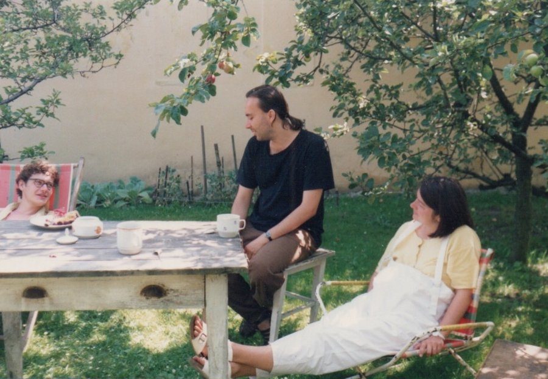
Chudenice, 1992. Malíř Pavel Šmíd, Petr Motýl, Ivana Motýlová. © Helena Šmídová
Petr Motýl Osobní vzpomínka na Šíleného Fridricha
Šílený Fridrich byla moje knižní druhotina, rukopis vznikl začátkem léta roku 1989, ještě ze socialismu. Tehdy jsem se jako básník pomalu rozepisoval. Moje první sbírka, v roce 2026 knižně stále ještě nevydaná (tisk nemám v úmyslu), se jmenuje Oči velmi. A časově zároveň se Šíleným Fridrichem, ale postupně a dlouho, vznikal Ten veliký veliký kamenný dům tam daleko daleko v horách, na nějž jsem dostal nabídku k vydání od tehdy začínajícího nakladatele Tomáše Koudely, v onom čase obyvatele severomoravského Havířova, posléze zakladatele olomoucké Votobie. Tomáš Koudela jednal rychle, a tak Ten veliký veliký kamenný dům tam daleko daleko v horách vyšel dříve než Šílený Fridrich, kterého pražská Mladá fronta nechávala odležet v siláži mnoha jiných básnických rukopisů.
Na psaní básní Šíleného Fridricha mám silnou vzpomínku. Byl to takový ten poryv, náhlá schopnost zapisovat něco, co básníkem prochází, co se píše jakoby „samo“, čemu se autor poddává, co zachycuje ve chvíli, o které si velmi dobře uvědomuje, jak je vzácná. Pak se mi to přihodilo už jenom jednou, u sbírky Lahve z ubytovny, že jsem najednou uviděl celou knížku před sebou a rychle jsem ji zapisoval. A zapsal. U Šíleného Fridricha to bylo silnější o iniciační pocit, který jistě mohl být mylný, totiž, že opravdu JSEM BÁSNÍK. V mládí to jistě zažijí mnozí a s výsledkem to přímo nekoresponduje. Ale mně se poštěstilo, jak se na to dívám s odstupem bezmála čtyř desetiletí, že to tak opravdu bylo, i v psané podobě, nejenom v onom inspiračním povichru, v oslnění a nadsmyslovém a nadrozumovém vzletu a letu, který není možné racionálně popsat, ale o němž historie umění dobře ví jako o starém, prastarém doteku se zázračnem.
Týká se to první poloviny sbírky, vlastního Šíleného Fridricha. Chtěl jsem vydat jenom Fridricha, ale to bylo na Mladou frontu moc krátké. Na každé nakladatelství by to byla příliš tenká sbírka. A tak jsem text doplnil. Něčím, co nevzniklo přímo na pokyn a objednávku nakladatelství.
Po onom fantastickém poryvu následovala setrvačnost, touha pokračovat v něčem, v čem se pokračovat nedá, ale přece trochu dá, ve vzpomínce na tu explozi, z níž ještě nějakou dobu třpytivé kousky a drobky poletují prostorem a časem, a je možné je zkusit polapit. I když už to není ono, pořád na tom přece něco je. Z toho doznívání, které trvalo docela dlouho, vznikly básně, u nichž jsem celek sbírky žádný neviděl, zaznamenával jsem je a mínil jsem, že to není špatné, ale na druhou stranu mně bylo jasné, že to za Fridrichem zaostává. No ale co s tím? Vyhodit básně do koše? Ne, nevyhodil jsem je. A uplynula řada měsíců a přišla zmíněná nabídka z Mladé fronty. Z básní, které jsem měl v šuplíku, jsem sestavil druhou část knížky, přičemž jsem do „matérie z drobků“ zasáhl ve finále velmi racionálně, linkou nakreslenou chemickým názvoslovím. Trvalo to...
Ostrava-Přívoz, tam Šílený Fridrich vznikl, bydlel jsem v létě roku 1989 na Kosmově ulici hned naproti chemickému provozu přidruženému ke koksovně Vítězný únor. Na Kosmově ulici se psalo dobře, to bylo pěkné být tou ulicí spjatý s první českou kronikou, o které jsem tehdy ovšem věděl málo, ale znal jsem a měl jsem velice rád příběh Vladislava Vančury o Kosmovi v Obrazech z dějin národa českého.
Ne, na tehdejší ničemné ostravské Pedagogické fakultě nejspíš vztah ke Kosmovi ani k Dalimilovi nezískal nikdo. Velká škoda, promeškat takovou příležitost v mládí, musel jsem tu cestu pak hledat později a sám. Tehdy, když jsem na Kosmově ulici začal bydlet, jsem byl před samotným závěrem svého studia, promoval jsem v červnu 1988. Málem jsem vysokou školu vzdal. Přerušil jsem rok předtím v polovině posledního ročníku studium, to jsem bydlel u rodičů v Hlučíně. A pak jsem půl roku pracoval jako doručovatel na poště a vystřídal jsem za tu dobu tři bydliště v Ostravě-Přívoze. První bylo u studenta výtvarky z pajdáku Petra Kočici, který měl vlastní maličký byt v domě hrůzy na Nádražní ulici, druhé bylo v bytě Rosti Macečka, to byl můj vrstevník, který nestudoval a byl v ostravském kulturním životě docela známou postavou, do všeho mluvil, všude byl... Jeho byt, o něco větší než maličký, zůstal prázdný přes delší letní sezónu, kdy Rosťa odjel pást ovce na Slovensko. A naposled to byla Kosmova, to byl byt mého bratra Ivana, který tam ale nikdy nebydlel, nicméně byt získal, když rok po gymnáziu pracoval chvíli jako zřízenec v ZOO a pak déle jako kulisák a o byt požádal a přidělili mu ho. Bytů bylo v Ostravě tenkrát dost a za socialismu se rozdávaly zadarmo. A takové bídné byty, jako byly ty v Ostravě-Přívoze, bylo možné dostat dokonce i bez úplatků.
Nakonec jsem se zase do školy vrátil, i do velikého domu rodičů v Hlučíně, jelikož v Ostravě-Přívoze bylo pro mne poněkud nevyhovující studijní prostředí (i Petr Kočica to v Přívoze v domě hrůzy vzdal a dodělal školu a odstěhoval se do Prahy... i Rosťa Maceček to v Přívoze vzdal... byla to vážně drsná čtvrť). Se zatnutými zuby jsem pak poslední ročník ostravského pajdáku dochodil. Nechtěl jsem jít na dva roky na vojnu, to byl strašák, a další podstatný důvod byl, že rodiče by mě rádi viděli diplomovaného, a naléhali a těšili se na to, že mě spatří v kravatě na promočním pódiu a budou zatlačovat slzu v oku: „Ten náš Petr...“ A já rodičům nějak chtěl vyhovět... Inu, není to nic hrdinského, ale tak to bylo... Když se na to dívám zpětně, říkám si, že to byla chyba na chybu, měl jsem z vysoké školy odejít hned v prvním ročníku, jenomže to se to šedesátiletému dědkovi radí. V osmnácti, kdy jsem na hanebné fakultě začínal, jsem se na to díval úplně jinak a neměl jsem dost sil vystoupit z cesty, kterou mi společnost a rodiče nalinkovali.
Po absolutoriu na pajdáku jsem onemocněl žloutenkou, čtyři měsíce jsem pobyl v nemocnici, propustili mě před Vánocemi. Když jsem pak byl za další měsíce uschopněn pro socialistickou pracovní povinnost, nastoupil jsem na své první místo vrátného, netuše, že vrátnic vystřídám v životě mnoho. Usedl jsem do Severomoravských vodovodů a kanalizací na později proslulé Stodolní ulici. Stodolní tehdy byla uliční periférií pár kroků od centra, s převahou romského obyvatelstva, ovšem oproti Ostravě-Přívozu to byla periférie velmi velmi solidní,.
Provoz vodovodů a kanalizací ve Stodolní byl určen především k havarijním opravám v oblasti širšího centra Ostravy, veliká budova a veliká montážní hala byly využívány jen tak trochu, zaměstnanců nebylo mnoho a většinou to byli Romové. Nastěhoval jsem se od rodičů zpátky do Ostravy-Přívozu, do Kosmovy ulice. Jednopokojový byt v přízemí, se záchodem na chodbě, sprchoval jsem se v práci na nočních, vybavuju si tu koupelnu u vodovodů a kanalizací jako živou, měla strop ve výši asi sedmi metrů a dole v té vysokánské a veliké holé místnosti byla taková sprchová buňka z plastu.
Byt v Kosmově ulici v Ostravě-Přívoze patřil mému bratrovi Ivanovi a tehdy jsem ho sdílel s kamarádem Láďou Krajčou, poněkud nezdárným studentem Pedagogické fakulty. Láďa Krajča doklepával poslední ročník školy, na což v Ostravě-Přívoze věru nebylo studijní prostředí, jak již zde bylo řečeno. Takže Láďa Krajča, spolubydlící vrátného Petra Motýla, neodevzdal diplomku a neodpromoval. Nicméně Láďa dostal jakýsi promoční odklad, to bylo možné, a když pak přišel Listopad 1989, s více než půlročním zpožděním přece absolvoval někdy v zimě 1990. Posléze takřka celý postudijní život Láďa Krajča byl a v roce 2026 ještě stále je učitelem na rodném Valašsku.
Ládíček je magistr
piv má plný registr
jásá jásá
já
jsem
krása magistr
Ono být celý život učitelem, klobouk dolů...
Ale zpět na Kosmovu ulici v Ostravě-Přívoze. Naproti hučel dvacet čtyři hodin denně chemický provoz koksovny Vítězný únor, na místní poměry vlastně tichý a tovární hala to byla nevelká. Veliká a hlučná chemička se nacházela až o kus dál, pohledově a zvukově odstíněna velikánskou haldou. Tím směrem jsem chodil či jezdil trolejbusem na Mexiko, Sokolovnu a Plivanec, totiž do hospod s těmito přízvisky.
Ano, Chemie v zubech. Vážně obrovská chemička uprostřed města, jako v Ústí nebo v Litvínově. Za chemičkou vězení Ostrava-Heřmanice, za vězením důl Rudý říjen, kde vězni z Heřmanic pracovali. Vůbec jsem nevěděl, že tam na začátku osmdesátých let seděl Václav Havel. A taky jsem nic netušil o jistém Romanu Pechovi, který v Heřmanicích seděl také na začátku osmdesátých let jako mladíček a o kterém jsem o moc let později napsal prózu.
Ostrava-Přívoz tenkrát byla hodně drsná čtvrť, i na tehdejší ostravské poměry, které obecně nebyly zrovna přívětivé. Tak drsný byl Přívoz, že jsem tam nechodil ani na pivo nebo jen zcela výjimečně. Bylo to o přesdržku, všude v Přívoze. Takže jsem za půllitry docházel na studentský Plivanec na Slezskou Ostravu, kde byl štamgastem můj spolubydlící Láďa Krajča. A v létě jsem seděl na zahrádce Sokolovny v Hrušově, často sám, a tam jsem přemítal o Šíleném Fridrichovi, ale nepsal jsem tam. Básně z Fridricha vznikly v bytě na Kosmově ulici. V centru města jsem na pivo usedal většinou do Rady, kde to bylo exkluzivní, což mě bavilo jenom někdy.
Tak snad ta vzpomínka vysvětluje, jak se chemická linie do druhé části knížky Šílený Fridrich dostala.
Ale nejenom takhle to bylo s emanací chemickou, no jasně, že Roman Pecha, vařič pervitinu, byl „chemik“. Ač moje vědomí o Romanovi v osmdesátém devátém nevědělo. Podvědomí nebo nevědomí vědělo dozajista... On Roman Pecha přesně v tu dobu, kdy jsem bydlel na Kosmově ulici, vařil pervitin o dvě krátké uličky dál. Je dost pravděpodobné, že jsem ho tam tehdy někde na ulici potkal. Ale ještě jsem ho nepoznal, že je to on. Určitě mi ničím nebyl nápadný, tam bydlely či se vyskytovaly různé existence, samé drsné typy. Nikdo „spořádaný“ tam snad ani nežil...
A taky jsem už znal Jirku Škorvagu, autora některých fotek na těchto stránkách, se kterým jsem se potkal, tuším v roce 1984, na festivalu studentských divadel Akademické Brno. Tehdy Jirka Škorvaga studoval v Praze Vysokou školu chemicko-technologickou a pak po diplomování inženýrem na VŠCHT po nějakou dobu působil jako odborný asistent. A chemické názvosloví v oddílu sbírky Chemie v zubech mi odborně zkontroloval, aby se tam neprojevovaly nějaké chemické nesmysly.
Tolik o chemii...
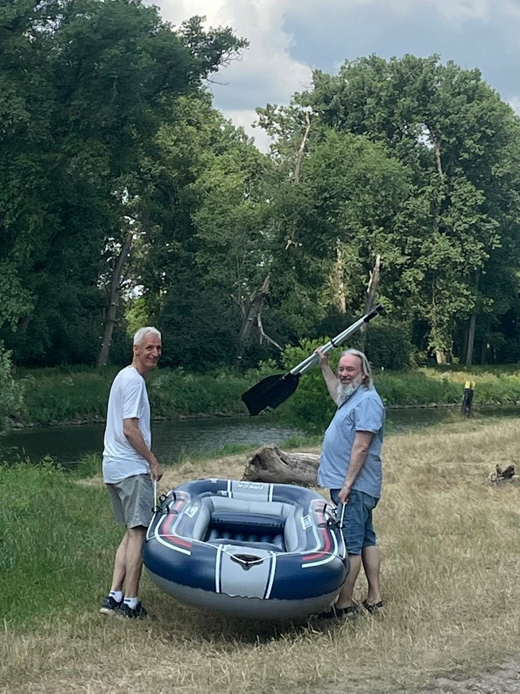
Jirka Škorvaga a Petr Motýl na Mělníku, 2025. © Ivana Motýlová
Odkaz na lokalitu (kdo dokouká, uvidí ten břeh a Petra Baťu na tom břehu před jeho chatičkou): www.youtube.com/watch?v=1JuqNmFv6W4
A ostravské kulturní klima a Šílený Fridrich?
Můj názor je, mohu se samozřejmě mýlit, že ostravští umělci a to, co činili, sbírku Šílený Fridrich ovlivnilo jen nepatrně.
Ostravské umění... Ale ano, občas jsem chodil do divadla, moje máma tam pracovala, měl jsem lístky zadarmo. Můj spolužák Jarda Šimíček byl aktivní jazzman, takže občas jazzový koncert. Ale bylo to sporadické a nevýrazné, éra Jana Kačera v ostravském divadle byla dávno pryč (ta mě ovlivnila hodně, někde uvnitř ve mně to bylo, jistě, ale že by to mělo vliv na Šíleného Fridricha?) A jazzový fanda se ze mě zkrátka nikdy nestal.
Docházel jsem sem a tam do hospody U Rady, tam sedávali ostravští umělci, to ano. Ale stálými hosty tu byli hlavně muzikanti z rozhlasového orchestru, ti pili hodně a všude v podnicích po centru, od rána až zase do rána. Nějak to zvládali. S některými jsem se trochu bavil, ale většinou měli nos nahoru, tak jako herci ostravského divadla, kteří do Rady zavítali jen občas na návštěvu a zdejší proslulé plzeňské pivo a na ostravské poměry dobré jídlo. A pyšnili se, ti herci. Kromě starého pana Miloslava Holuba ve výčepu, který se nevěnoval pyšnění se, ale soustředěnému pití, ano, dávám mu ten obehraný titul „pan herec“, ale to on opravdu byl.
Ale i kdybych býval znal tenkrát U Rady každého a byl bych tam býval byl štamgastem: i tak by tam nebylo s kým se bavit o poezii Jiřího Koláře nebo o Kolářově překladu sbírky Ocel a dým Carla Sandburga. Kolář a Sandburg Šíleného Fridricha ovlivnili nepochybně. To byly knížky v ostravských knihovnách dostupné, kupodivu i emigrant Jiří Kolář se tam našel, zapomněli ho vyřadit. Také je ve Fridrichovi kapka surrealismu, zase jsem vycházel z knihoven, nikoliv z knih zapůjčených od ostravských básníků. Ale od jakých básníků vlastně? To mě ujelo, s nikým takovým jsem se neznal. Petr a Pavel Hruškovi studovali Vysokou školu Báňskou v čase, kdy jsem chodil na pajdák, ti ale tehdy ještě skoro nic nepsali. A co četli, netuším. Znal jsem je přes svého bratra jako významné postavy ostravského trempingu. Jana a Dana Balabána jsem poznal na začátku osmdesátého devátého roku, ale na Šíleného Fridricha neměli bratři Balabánovi vliv žádný. Dan Balabán je malíř, pokud jde o Jana Balabána, ve jménech básníků jsem se tenkrát s ním neshodl na ničem kromě Petra Bezruče. Škoda, že v řeči s Janem Balabánem nedošlo na Edgara Lee Masterse, toho on měl nejspíš rád už tehdy. I když, kdo ví... Pamatuju si, jak s velkým zaujetím mluvil o Ray Bradburym, jako tajemného ilegálního autora zmiňoval H.P. Lovecrafta. Mně Bradbury nic neříkal. A taky Jan Balabán měl rád Dostojevského, který mně byl cizí a je dodnes. A Bílou velrybu, tu jsem přečetl až pár let poté a ocenil ji, vlastně mě jejím doporučením Jan Balabán od ní na nějaký čas odradil, to se tak v mládí stává... Ale to už je o próze, však Jan Balabán byl prozaik, já v roce 1989 určitě ne.
Teď jsem se konečně dostal do vinárny U Sudu či do hotelu Brioni, kde se někdy od začátku osmdesátého devátého roku začali scházet výtvarníci mého věku, pozdější výtvarná skupina Přirození, která se tak v roce 1989 ale ještě nejmenovala. Jan a Dan Balabán, Pavel a Helena Šmídovi, Hanka Puchová, „Paroh alias Parůžek“ Surůvka. Moc si nevzpomínám na malíře Bendu, který tam určitě přítomen byl... Nejspíš i organizátor Láďa Holec, ale také si ho vybavuju až později... Určitě až se značným odstupem čase se připojil Petr Pastrňák, ten v osmdesátém devátém roce ještě nemaloval, znal jsem ho totiž odjinud přes jeho ženu, jazzovou fanynku Dáju.
Ale Šílený Fridrich, o něm je tohle mé psaní... Má být... Takže Jiří Kolář, Carl Sandburg, Edgar Lee Masters, něco z Bohumila Hrabala. Ze surrealistů a spol to, co bylo dostupné v ostravské knihovně, čili Oldřich Wenzl, Alfred Jarry, Raymond Queneau, ale z nich se dostala do Šíleného Fridricha jenom špetka, ale byla tam, to jistě. A Petr Bezruč, samozřejmě. A ještě musím zmínit jméno Geoffrey Hill, jehož verše jsem četl v antologii Ostrovy plovoucí k severu. No ano, ale ta antologie vyšla v osmdesátém devátém roce. Časově to nějak nevychází. Vůbec nevím, jestli jsem ji četl před vznikem Šíleného Fridricha nebo až potom. Takže nejsem schopen doložit, jestli mě Král Offa Geoffrey Hilla (z cyklu Mercijské hymny) ovlivnil při vytvoření postavy-nepostavy Šíleného Fridricha. Možná jsem si pozoruhodnou shodu z četby, mě dodnes oslovující shodu, prostě promítl do minulosti. Co vím určitě, to je, že inspirací mně byl kromě „škaredého zjevu“ z Bezruče Podivuhodný kouzelník z Nezvala a doktor Faustroll z Alfreda Jarryho. A Terrestris z Ivana Blatného. Ale málo platné, v hlavě to je pro mě pořád nejvíc Král Offa.
Ono to asi celé bylo spíš jinak a až tolik nezáleželo na četbě. Vytváření mýtických persón bylo v tom čase zkrátka „ve vzduchu“ a básníci zapisovali vyšší vůli (podle Gustava Meyrinka se Golem vynoří jednou za 33 let)... Recenzenti si vyjevení se toho jevu povšimli. Tehdy se poezie recenzovala. A to se zájmem o to, co píší, ze strany těch, kteří recenze psali. A byl tu i zájem i těch, kteří recenze četli, což v onom čase nebyli pouze básníci...
Jó, tenkrát... No to víte, pamětník vzpomíná... Však na to mají historici nůžky, kterými „orální historii“ přistřihují křídla.
Tak! A Šílený Fridrich je napsaný a leží v almaře. V knížce je to její první část. A autor se nesnaží sbírku vydat, ač revoluční rok oponou trhnul a příležitosti se naskýtají.
V srpnu roku 1989 jsem nastoupil jako vrátný na ubytovně Staveb silnic a železnic v Praze-Stodůlkách. Rozkoukával jsem se nad Vltavou, ale bylo to na mě nějak moc velké a nemohl jsem se tam vyznat. Pražská literární společnost mi připadala naprosto nedostupná. A přišel Listopad a všechno se měnilo, a já u toho nějak nebyl. Zrovna v Listopadu mě zase dostihly zdravotní potíže, ne velké, ale chvilku jsem pobyl v nemocnici a byl jsem pak nějaký celý zesláblý. Na vrátnici jsem si chodil směny odsedět, ale jinak jsem byl rád, že jsem rád, a najednou bylo jaro devadesátého roku a já měl pocit, že příležitost „být u toho“ je pryč. Což tak jistě nebylo, ale já jsem zůstával na okraji a neprosazoval jsem se.
Ale přece jsem někdy během roku 1990 poslal rukopis Šíleného Fridricha, tu první část, do nakladatelství Mladá fronta. Dlouho mi neodpovídali. Já to bral, byla doba, kdy mnoho autorů vystoupilo z podzemí, jiní ze zákazů, ještě jiní přijeli z emigrace, další v cizině zůstali, ale v Čechách chtěli vydávat, a to byli jen ti živí. A co socialismem zneuznaní a zakázaní mrtví?
Až v r. 1991 (po roce, takže vlastně urgentně, ale já to nechápal) se mi z Mladé fronty ohledně Šíleného Fridricha ozval Jiří Rulf. To jsem se už oženil a bydlel jsem ve Zbuzanech hned za geografickou hranicí Prahy. A Jiří Rulf mi sdělil, že by Mladá fronta Šíleného Fridricha vydala, ale musel by být delší. Takže jsem definitivně dokončil druhou část knížky a nazval ji Chemie v zubech. Už ten název... Kampak se hrabe na Šíleného Fridricha.
Párkrát jsem byl na schůzce s Jiřím Rulfem v redakci v Panské ulici (nomen omen). Také jsem dvakrát na domluvenou schůzku nepřišel, což bylo přijato s údivem: „Tak my vám chceme vydat sbírku, a vy...?!!!“
Redakční prostředí na mě působilo příšerně. Bylo mi jasné, že to je počátek celoživotních problémů v tomto směru. A taky, že to tak dopadlo, a trvá to dodnes. Ale potkal jsem se za pětatřicet let, které od té doby uplynuly, přece jen s lidmi z nakladatelského oboru, kteří mi byli podstatně sympatičtější než tenkrát Jiří Rulf. Jemu podobní jsou tu pořád, pochopitelně. Pro mě to bylo moje první setkání v Praze s někým takovým. Byl to člověk, který upřímnost či idealismus viděl jako charakterovou vadu, jako něco hodného posměchu, s čímž jsem se měl později ještě mnohokrát setkat, ale tehdy mě to prostě hrozně, vážně hrozně překvapovalo. Tohle, že je redaktor poezie? A básník? Úlisný, oportunistický, poklonkující nahoru a za zády se pošklebující těm, kterým poklonkuje... Bylo mi z toho špatně, váhal jsem, jak jsem již řekl, na dvě schůzky jsem vůbec nepřišel. Ale nakonec jsem sklonil hlavu a knížka vyšla. S obálkou, na kterou jsem neměl vliv a kterou jsem považoval za trapnou. Počátek mé pražské literární kariéry... Rok 1992.
Na druhou stranu, to jsem tehdy vůbec nedocenil, jistě musel mít Jiří Rulf značný a pozitivní zájem vydat knížku autorovi, který neměl žádnou protekci, ani nebyl jeho příbuzný, ani mu nemohl poskytnout žádnou protislužbu, ani s ním nejel v žádných novinářských kšeftících. Ani mu spolupráci nijak neulehčoval. V oněch časech ovšem o vydání knížky rozhodovala redakční rada – takový luxus to byl - , nikoliv jeden redaktor, ten pak spíš knížku měl dotáhnout do konce. Nicméně ve věci Šíleného Fridricha konala Mladá fronta, kterýžto kolos zastupoval Jiří Rulf, jen a jen kvůli mé poezii samé. Z dnešního pohledu div divů. Ale stalo se to.
V přízemí budovy, ve které sídlilo nakladatelství Mladá fronta a deník Mladá fronta (tehdy přejmenovaný na Dnes), cinkal půllitry a panáky rumu a vodky výčep. Tam jsem si vždycky dal pivo, když jsem jednal s Mladou frontou. Pak jsem zapomněl, ve kterém domě ten dávno zrušený zakouřený podniček na stojáka vlastně v Panské ulici byl. A vida! V létě roku 2026 jsem v místnostech bývalého výčepu v Panské projednával s Ferdou K. vydání své prózy Poslední knihovník na světě.
„Tady byly záchodky. Sem chodili novináři. A teď tady mám bedny s vínem. Tady máš jednu, Petře. Ať ti slouží na zdraví.“
„Zimmermann?“
„Jako Jára Cimrman. Výborné víno.“
Vážně chutnalo dobře.
Celý život chci věřit tomu, že jdu „per aspera et astra.“
Vážně, celý život tomu chci věřit.
Ale co když je v Čechách jen jediná možnost: jít z Liptákova do Liptákova...
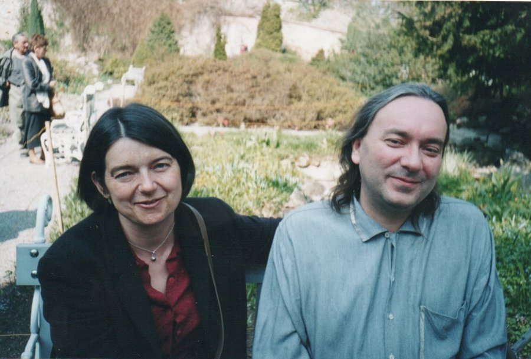
V zahradě ráje.... © archiv autora
Petr Motýl Hudební život Šíleného Fridricha
Básnická sbírka Šílený Fridrich vyšla v roce 1992, tedy v čase, na který se s odstupem vzpomíná jako na „divoká devadesátá léta“. Pro určitou část české společnosti to nepochybně divoká léta byla, ovšem kdyby se to spočetlo statisticky, což tedy nevím, jak by bylo možné udělat, tak by se nutně dospělo k výsledku, že většina občanů pokračovala v poklidném životě, na jaký byli zvyklí za socialismu, a jejich zavedené stereotypy se měnily buď velmi pozvolna nebo vůbec. Z novinek kapitalismu „obyčejný člověk“ neužíval marihuanu ani kokain, ale dostupné pomeranče a maso na guláš v obchodech, v úřadech seděli ve svých kancelářích úředníci, co už tam seděli dávno, ze základních ani středních škol učitelé nebyli vyhazování z důvodu bývalého členství v komunistické straně, velké průmyslové a stavební podniky zatím ještě pořád fungovaly a jejich zaměstnanci docházející do práce byli pořád titíž lidé, kteří tam pracovali už před rokem 1989.
Do konce června devadesátého roku jsem seděl na vrátnici na ubytovně Staveb silnic a železnic, tam jsem „divočinu“ začátku devadesátek zažil v podobě amnestie a příchodu mnoha nových zaměstnanců na stavbu přímo z kriminálu. Dlouho nevydrželi. Bylo to pestré, později jsem téma zpracoval ve sbírce Lahve z ubytovny.
Poté jsem se stal „příživníkem“, což už se za kapitalismu smělo, stát zrušil paragraf, který umožňoval nepracujícího umístit do nápravného zařízení. Pokoušel jsem se svou tvorbu prosadit v rozhlase či v denním tisku, což se dařilo velmi chabě, neměl jsem ty správné manažerské schopnosti a nemám je dodnes. Také jsem absolvoval neúspěšné přijímačky na scenáristiku na FAMU. Někde v práci jsem obvykle vydržel jenom pár dnů, vzpomínám si jak jsem byl na Žižkově nočním hlídačem na stadionu a v kumbálu hlídače byla strašná zima a na přímou žádost tam odmítli umístit přímotop. „Tak sbohem!“
Někdy ten můj pracovní poměr trval jen den, jako když jsem byl podívat na jednu směnu u kamaráda mého kamaráda. Ten se zabýval mytím oken v kancelářích, v kterémžto oboru pak působil po léta coby živnostník, a ve zbytku času se věnoval jazz-rockové kytaře. Ale já jsem tam najednou viděl, že mám hrozné závratě, když bych měl leštit okno v devátém patře, tak jsem to u oken vzdal, dříve než jsem začal. A tak... Tak nějak...
V červnu devadesátého roku jsem se oženil a moje žena od září nastoupila jako učitelka na základní škole. V roce 2026 ještě stále učí a ještě pořád je to moje žena, se kterou žiju. A s našimi výdělky je to v roce 2026 stejné jako v roce 1990, já nevydělám skoro nic a žiju z jejího učitelského platu. V některých letech jsem si i něco vydělal, to ano, ale nikdy toho moc nebylo. Vydržel bych celý život psát, kdybych doma tu podporu neměl? To je otázka, která je vyslovena, ale nebude zodpovězena. Máme své životy, které žijeme, v mém případě je případnější říci: „které jsme žili“, jsem už na sklonku. Hypotetické otázky po tom „co by bylo kdyby“, se samozřejmě čas od času vynoří. Ale naše hypotetické životy jsou nám skryty v alternativních světech anebo spíš neexistují a nikdy ani neexistovaly.
Jazz-rockový kytarista „Miloťák“ umývající okna. Ano, už se dostávám ke zhudebněnému Šílenému Fridrichovi. V září roku 1991 jsem začal s pravidelným docházením do práce coby prodavač knih u stánku na rohu Kaprovy ulice, přímo proti vchodu do metra. Ten vchod je tam pořád, ten nejbližší směrem od Staroměstského náměstí, stánek s knihami už tam není dávno. Zmiňuji se o tom v próze Ahoj Marku, to jsou ledy v pohybu (Volvox Globator, 2024). Prodával jsem tam knížky s kamarádem, kterého jsem v textu pojmenoval Marek Michej. Ta postava, to není přímo úplně on, tak jako třeba Kerouacův Dean Moriarty není Neal Cassady a tak podobně. Zkrátka literatura. Pár lidí ten rozdíl mezi postavou a člověkem, který žil svůj život, chápe. Dost lidí se ovšem zajímá o to „jak to doopravdy bylo“ či o to: „Kdo je ta postava? Je skutečná? A kde bychom se s ní mohli potkat? Dáte nám adresu, pane autore?“ To se ale týká knih, které mají širší publikum. Nebo ho měli. A ostatně ve dvacátém prvním století to už tak zajímavé téma není, nikdo se nepídí po tom, zda někde v našem světě žije v konkrétní ulici Harry Potter či Frodo (tak jak je to s těmi alternativními světy? lze je vyvolat? a odkud?). A ještě bych měl dodat: Nikdy jsem širší publikum neměl. Takže otázka: „Jak to doopravdy bylo?“ se mě osobně týkala jen vzácně.
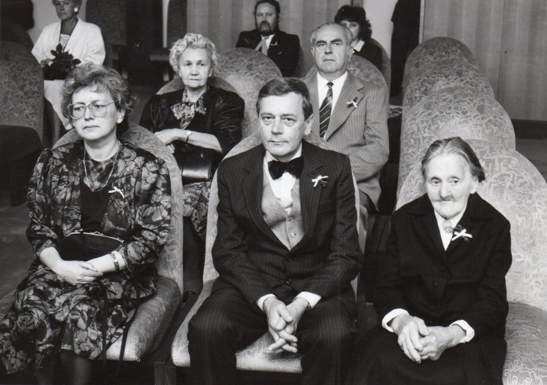
Ale teď vážně, tak jak to doopravdy bylo?. © archiv autora
Můj spoluprodavač u pultíku v Kaprově ulici se jmenoval Tomáš Ligenza. Už je to dávno, co zemřel. Byli jsme přátelé, neseznámili jsme se v práci u knižního stánku, nastoupili jsme tam jako dvojice přátel. Občas u nás v čase onoho prodeje knih Tomáš Ligenza i provizorně bydlel. S Tomášem jsme tehdy dali společně výpověď prodávání knih u Lubora Mati (počátky později známé knižní distribuce) někdy v lednu devadesátého prvního roku. Nepobyli jsme v Kaprovce ani celý půlrok. Já jsem pak vzápětí nastoupil jako vrátný v divadle Na zábradlí, tam jsem byl tři měsíce, pak jsem se stal kotelníkem v plynové kotelně u nějaké veliké stavební firmy, už nevím, jaké, a tam jsem si udělal topičské zkoušky a v té kotelně jsem napsal sbírku Lahve z ubytovny, někde v Malešicích či kde. Tam jsem pobyl taky jen pár měsíců a pak jsem byl kotelníkem na ubytovně v Bohnicích, která se právě mínila proměnit v krásný hotel, ale nějak jí to trvalo. To byl věžák snad o dvanácti patrech. Jak dlouho jsem tam vydržel? Sám nevím, pamatuju si, že v říjnu 1992 jsem tam byl určitě, to se nám narodil syn. Ale kdy jsme to „na Krakově“, jak se té části Bohnic říkalo, opustil a odešel jsem do uhelné kotelny, k zaměstnavateli Strojírny Košíře na pracoviště Zličín, to vím jen přibližně. Podzim 1992? Podzim 1993?
U bohnické kotelny není na co vzpomínat, nelíbilo se mi tam, takže mi to vymizelo z paměti. Zato na Zličíně se mi líbilo ohromně, ale to už jsem se časově dostal za sbírku Šílený Fridrich, takže dost.
Šílený Fridrich vyšel v roce 1992 a jeho zhudebnění nějaký čas trvalo. Když bylo několik básní z Šíleného Fridricha Tomášem Ligenzou hudbou opatřeno, čas od času byl Šílený Fridrich předveden na pódiu. Moc těch vystoupení nebylo. S Tomášem Ligenzou jsme k vystupování před lidmi měli dost podobný vztah. Chtěli jsme to a zároveň nechtěli. Já chtěl být básník, tak jsem to měl jednodušší. Tomáš Ligenza chtěl být hudebník, tak to měl složitější. Příznačné bylo, že svoji kapelu pojmenoval hosté s malým „h“. Takže ideálně, podle jeho představy, by vystupovala vždycky ještě s jinou kapelou a na plakátě by bylo kromě jiného napsáno: a hosté. Víc o tom zmiňuju v knížce Ahoj Marku, to jsou ledy v pohybu. Ale – znova připomínám – tam je to zpracované literárně, a nikoliv „fakticky“. Jenomže, co jsou to vlastně fakta? Z hlediska filozofie něco hodně jiného než z hlediska fyziky a z hlediska literatury něco jiného než z hlediska lingvistiky. A co je to vlastně jazyk, tedy to, co je pro literaturu tolik podstatné? Nevíme. Představa, co jazyk je, se mění, a jazyk zůstává. Těší mě, že současnosti k jazyku zaujímají ti, co o něm teoreticky uvažují, výrazně jiný postoj než strukturalisté, jejichž pohled v českých poměrech dlouho převládal, a vypadal už jako definitivní. A to mě štvalo, říkal jsem si, to přece nemůže být takhle jednou provždy, že bude jazyk považován za „obor“ uvnitř světa, za něco, co bylo změřeno a zaškatulkováno. Takže jsem rád za momentálně poměrně přijímané a reflektované teorie o podstatě jazyka Viléma Flussera. Jsem rád za tu možnost změny a jiného pohledu. A je tu umělá inteligence, která je na „jazykových modelech“ založená, takže nutí mnohé o jazyce přemýšlet a spousta lidí si teď uvědomuje, že jazyk není něco už „vyřešeného“ a „prozkoumaného“ v zaprášené krabici. Jazyk prokázal svou nesmrtelnost a sílu a pohled člověka na jazyk se proměnil... Kdo ví, co v tom směru ještě přijde... Pro mě byl vždycky jazyk nikoliv vyjádřením světa, ale světem samým, vesmírem, nekonečnem...
Tomáš Ligenza se zabýval jaksi rovnocenně s hudbou právě uvažováním o světě, a to v kosmických rozměrech. Nebyl to typ člověka, který by ležel v knihách, to jsem byl a pořád jsem já. Tomáš Ligenza vycházel z předpokladu, který je ve filozofii i ve víře zformulovaný od antiky, totiž že v lidské hlavě lze najít všechno, že už to tam všechno je. Dáno božským vdechnutím nebo třeba něčím jinak pojmenovaným. A on Tomáš Ligenza byl člověk vidoucí. Což posléze jeho tělo neuneslo, ta tíha a síla vidění byla na jeho tělo příliš. Což tak často bývá.
To mě na našem společném konání zajímalo. Že slovo a hudba se spojí s něčím, co nelze vyjádřit ani slovem, ani hudbou, co je „za“ a je nevyslovitelné, ale je možné se k tomu nějakým způsobem přiblížit. Což nás dva spojovalo a na našich společných vystoupeních se dělo, vpodstatě vždycky. Někdy to v tom směru vyšlo líp, někdy hůř. Byli tam ještě další hudebníci, a ti to nám dvěma nekazili, ale ani nám s tím vlastně nepomáhali. Byli to přátelé a tehdy naladění pozitivně a jaksi i duchovně. Pro publikum to bylo asi zajímavější, těžko říct, když duněly i bicí a foukal saxofon. Ale Šílený Fridrich se dal odehrát i ve dvou, což se taky zrealizovalo a nám to vyhovovalo. Ale ta vystoupení se nekonala často, to vůbec ne, aby z těchto řádek nevznikl dojem, že jsme někde týden co týden stáli spolu s Tomášem Ligenzou na pódiu.
Posléze naše spolupráce ještě sporadicky pokračovala i po Fridrichovi, ale už to nebylo ono. Obecně. I když naše úplně poslední společné vystoupení, ve dvou, v rámci literárního večeru v nějakém klubu na Národní třídě, to bylo něco, na co nikdy nezapomenu. Tam přišlo to, co bývalo, a letěli jsme s Tomášem časoprostorem, pro tu chvíli, svobodně a ve světě nad světem. Ne, žádné drogy tam nebyly, pokud byste se chtěli právě na tohle zeptat.
Šíleného Fridricha nahrál i Český rozhlas, díky tehdejšímu redaktorovi této instituce Marku Tomanovi, posléze dlouho a dlouholetému úředníkovi Ministerstva zahraničí a autorovi mnoho prozaických knih, které nikoho neurazí. V čase nahrávání byl Marek Toman nadějně začínající básník. Budiž mu to připsáno k dobrému, že tu obzvláštní partičku přivedl do studia v Karlíně. V první půlce devadesátých let se takové věci děly.
Bylo by jistě seriózní zde uvést, kdo se tehdy nahrávání zúčastnil, s jedinou výjimkou ale už nikdo v oblasti hudební nepůsobí. Tomáš Grund, bicí, Tomáš Průša, saxofon a flétna, Petr Topolánek, basová kytara a kytara, Tomáš Ligenza, basová kytara a kytara. A možná tam byl ještě Tomáš Erben, kytara, už si nepamatuju. Samí Tomášové a Petři...
Ta nahrávka úplně nevyšla. Nikdo z nás, kromě saxofonisty a flétnisty Tomáše Průši, nebyl profesionál, který by uměl znova a znova dokola nahrávat tu samou báseň-hudbu, aby byla „technicky v pořádku“, to bylo něco, co jsme s Tomášem Ligenzou vlastně nechtěli. No ale k rockové kapele nahrávání tak nějak patří, jistě. To jsme ale ani já, ani Tomáš Ligenza tehdy neměli ujasněné. Ani jsme si to nechtěli ujasnit.
Ta nahrávka asi je v archivu Českého rozhlasu. A nejspíš ji mám i někde na historické magnetofonové kazetě. Ale tu kazetu nemůžu najít. Tak třeba se nahrávka jednou vynoří a tady se objeví odkaz na poslech Šíleného Fridricha na youtube. Ale nebude to ono, to ne. To by se posluchač musel přenést v čase do úplně zakouřeného maličkého Pant klubu v Dejvicích v devadesátém třetím roce.
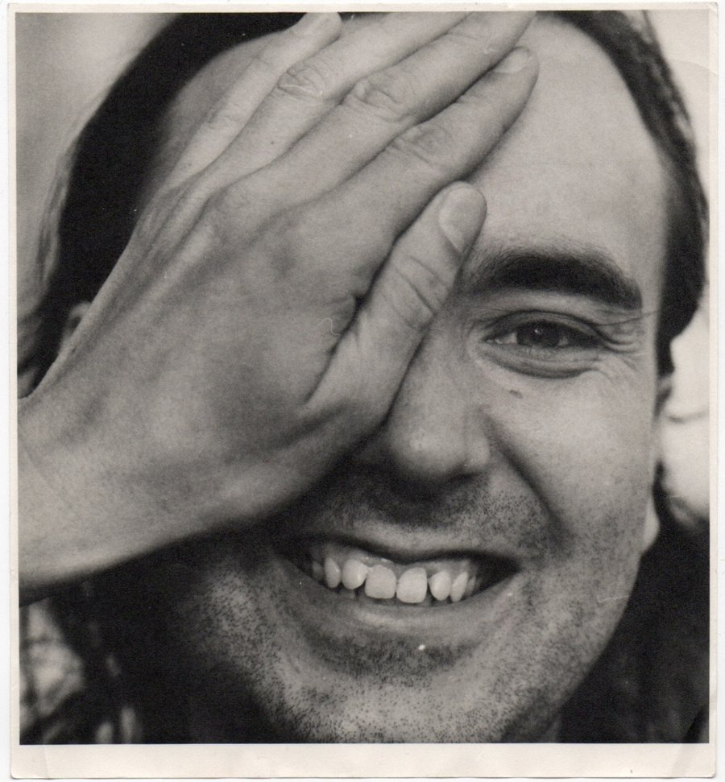
V čase hudebního života Šíleného Fridricha. © Tomáš Průša
© Petr Motýl / design Zebry